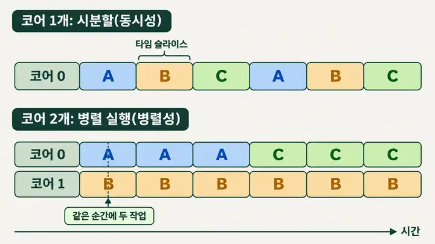
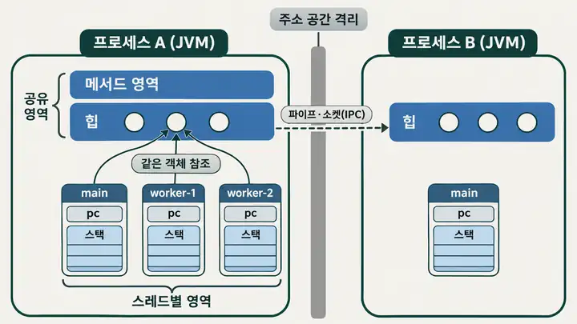
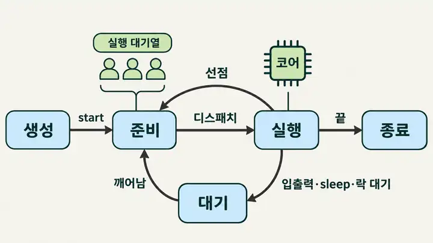
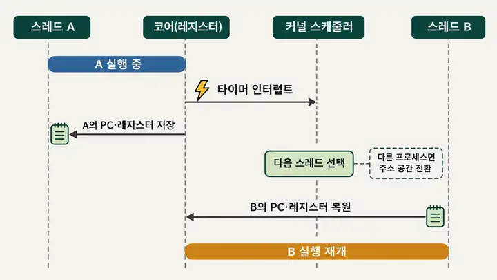

자바 고급 1편 / 01회
프로세스와 스레드 소개
코어 하나가 여러 프로그램을 번갈아 실행하는 원리에서 출발해, 프로세스와 스레드가 무엇을 나누고 무엇을 공유하는지, 운영체제가 스레드를 언제 어떻게 바꿔 끼우는지를 JDK 21 실험으로 확인한다.
오늘 끝나면 할 수 있는 것
- 멀티태스킹(시분할)과 멀티프로세싱(여러 코어)의 차이를 동시성·병렬성이라는 말로 구분해 설명하고,
Runtime.availableProcessors()가 무엇을 세는지 말할 수 있다. - 프로세스와 스레드가 각각 가지는 자원을 메모리 영역 단위로 나누어 그리고, JVMS의 런타임 데이터 영역 가운데 스레드마다 따로 생기는 영역과 모든 스레드가 공유하는 영역을 짚을 수 있다.
- 자바의 플랫폼 스레드가 운영체제 스레드에 1:1로 대응한다는 사실을
jcmd스레드 덤프로 확인하고, 아무 스레드도 만들지 않은 프로그램에서도 JVM이 띄우는 스레드들을 구분할 수 있다. - 운영체제 스케줄러가 스레드를 준비·실행·대기 상태 사이로 옮기는 규칙을 설명하고, 자바의 우선순위와
Thread.yield()가 왜 보장이 아니라 힌트인지 근거를 들어 말할 수 있다. - 컨텍스트 스위칭에서 저장·복원되는 것과 직접·간접 비용을 설명하고, 코어 수보다 많은 CPU 작업 스레드가 처리량을 늘리지 못하는 이유를 실험 결과로 설명할 수 있다.
핵심 강의 → 핵심 요약 → 실무 재판단 → 적용 연습 → 이해 확인
01 핵심 강의
이 강의의 차례 · 소제목 17개
- 이 회차의 질문: 코어 하나는 한 번에 한 흐름만 실행한다
- 실습 환경과 이 회차의 실험 방식
- 멀티태스킹: 시간을 잘게 나누어 번갈아 실행한다
- 멀티프로세싱: 실행 장치를 여러 개 둔다
- 프로세스: 실행 중인 프로그램과 그것이 가진 격리된 세계
- 한 층 아래: JVM은 자식 프로세스를 어떻게 만드는가
- 스레드: 프로세스 안에서 CPU를 받는 실행 흐름
- 자바 스레드의 정체: 운영체제 스레드와 1:1
- nid의 정체: 리눅스의 tid와 macOS의 Mach 스레드 포트
- 스레드 스택 2MB는 어떻게 잡히는가: 예약, 커밋, 보호 구역
- 스레드와 스케줄링: 다음에 누가 코어를 받는가
- 컨텍스트 스위칭: 무엇을 저장하고 무엇을 되살리는가
- 실험: 코어보다 많은 CPU 작업 스레드는 무엇을 바꾸는가
- 스레드 안에서 선점을 재 보기: 시계의 빈틈
- 시분할이 남기는 문제: 실행은 아무 곳에서나 끊긴다
- 흔한 오해와 함정
- 이 지식이 다시 쓰이는 곳
이 회차의 질문: 코어 하나는 한 번에 한 흐름만 실행한다
지금까지 이 강좌에서 본 자바 코드는 모두 한 줄씩 차례로 실행된다고 가정했다. main 메서드가 시작되면 첫 문장을 실행하고, 메서드를 호출하면 그 안으로 들어갔다가 돌아오고, 마지막 문장이 끝나면 프로그램이 끝난다. 이 "차례로 진행되는 실행의 흐름"이 프로그램 안에 하나뿐이라는 것이 지금까지 모든 예제의 숨은 전제였다. 자바 언어 명세(JLS) 17장도 앞 장들의 논의가 대부분 한 번에 한 문장이나 식을 실행하는, 즉 하나의 스레드(thread)가 실행하는 코드의 동작만 다룬다고 밝히며 시작한다. 이 권은 그 전제를 깨는 데서 출발한다.
하드웨어 쪽에서 보면 흐름이 하나라는 전제는 자연스럽다. CPU 코어(core) 하나는 프로그램 카운터(PC, program counter)라는 레지스터가 가리키는 주소에서 명령어를 읽고, 실행하고, PC를 다음 명령어로 옮기는 일을 끝없이 반복한다. 요즘 코어는 파이프라인과 비순차 실행으로 여러 명령어를 겹쳐 처리하지만, 그 명령어들은 하나의 명령어 흐름에서 나온 것이고, 그 흐름 자신이 보기에는 순서대로 실행한 것과 같은 결과가 나오도록 맞춰진다(코어 하나가 두 흐름을 섞어 실행하는 SMT는 뒤에서 따로 다룬다). 그러니 코어 하나만 놓고 보면, 어느 순간에 진행되는 실행 흐름은 하나다.
그런데 실제 컴퓨터에서는 브라우저와 IDE와 빌드와 음악 재생이 동시에 돌아간다. 서버 한 대는 수백 개의 HTTP 요청을 동시에 처리한다. 코어 수보다 훨씬 많은 일이 어떻게 "동시에" 진행될 수 있는가. 이 회차는 이 질문을 네 단계로 푼다. 먼저 하나의 코어를 시간으로 나누어 쓰는 멀티태스킹과, 코어 자체를 늘리는 멀티프로세싱을 구분한다. 다음으로 운영체제가 일을 나누는 단위인 프로세스와 스레드가 각각 무엇을 갖고 무엇을 공유하는지 메모리 수준에서 본다. 그다음 어느 스레드가 언제 코어를 받는지 결정하는 스케줄링을, 마지막으로 코어 위의 스레드를 바꿔 끼우는 컨텍스트 스위칭과 그 비용을 본다.
실습 환경과 이 회차의 실험 방식
이 회차의 예제는 JDK 21 하나로 따라 할 수 있다. 소스 파일을 빈 폴더에 모아 javac로 컴파일하고 java로 실행한다. 실행 중인 JVM 안을 들여다볼 때는 JDK에 함께 들어 있는 jcmd를 쓰고, 운영체제 쪽 수치는 운영체제가 제공하는 도구로 본다. 본문의 출력은 Apple M1(성능 코어 4개와 효율 코어 4개, SMT 없음) 위의 macOS에서 Temurin JDK 21.0.13으로 실행한 결과다.
멀티스레드 실험에는 실행할 때마다 달라지는 값이 많다. 프로세스 번호(pid), 스레드 번호, 출력 순서, 걸린 시간, 컨텍스트 스위칭 횟수가 그렇다. 이런 값이 나오는 곳에는 "실행마다 다르다"고 표시하고, 숫자 자체보다 숫자들 사이의 관계(어느 쪽이 몇 배 늘었는가, 무엇이 그대로인가)를 읽는다. 리눅스에서 같은 것을 확인하는 방법이 다를 때는 그 방법도 함께 적는다.
java -version # 21로 시작하는지 확인한다
javac -encoding UTF-8 *.java # 예제를 컴파일한다
java ThreadsInJvm # main이 있는 클래스를 실행한다
jcmd # 실행 중인 JVM 목록(pid와 메인 클래스)을 본다
jcmd <pid> Thread.print # 그 JVM의 모든 스레드를 덤프한다(<pid>는 실제 번호로 바꾼다)멀티태스킹: 시간을 잘게 나누어 번갈아 실행한다
멀티태스킹(multitasking)은 하나의 CPU로 여러 작업을 번갈아 실행해서, 사람이 보기에 동시에 진행되는 것처럼 만드는 방식이다. 핵심은 시간을 나누는 것이다. 작업 A를 잠깐 실행하고, 멈추고, 작업 B를 잠깐 실행하고, 멈추고, 다시 A로 돌아온다. 한 번에 실행하는 짧은 시간 단위를 타임 슬라이스(time slice) 또는 퀀텀(quantum)이라고 하고, 이렇게 CPU 시간을 나누어 쓰는 방식을 시분할(time sharing)이라고 한다. 전환이 사람이 알아차리기 어려울 만큼 자주 일어나면, 세 작업은 각각 원래보다 느리게 진행될 뿐 모두 "동시에" 진행되는 것처럼 보인다.
코어 1개, 작업 A·B·C를 시분할로 실행
시간 →
코어0 | A A | B B | C C | A A | B B | C C | A A | ...
└─┬─┘
타임 슬라이스 하나
어느 순간을 잘라 보아도 코어 위에는 작업 하나뿐이다.
"동시에"는 긴 시간 구간에서 본 착시다.
누가 작업을 멈추게 하는가에 따라 멀티태스킹은 두 가지로 나뉜다. 협력형(cooperative) 멀티태스킹에서는 실행 중인 프로그램이 스스로 "이제 다른 작업에 양보한다"고 운영체제에 알려야 전환이 일어난다. 이 방식은 구현이 단순하지만, 한 프로그램이 무한 루프에 빠지거나 양보를 잊으면 다른 모든 작업이 멈춘다. 선점형(preemptive) 멀티태스킹에서는 운영체제가 프로그램의 협조와 상관없이 CPU를 빼앗는다. 운영체제는 하드웨어 타이머를 설정해 두고, 타이머 인터럽트(timer interrupt)가 들어오면 CPU가 실행하던 사용자 코드를 멈추고 커널 코드로 넘어간다. 커널은 그 자리에서 지금 스레드가 자기 몫을 다 썼는지 따져 보고, 다 썼으면 다른 작업으로 바꾼다. 오늘날 서버와 PC에서 쓰는 범용 운영체제는 선점형이다.
선점형이라는 사실에는 프로그래머가 반드시 기억해야 할 결과가 따른다. 프로그램은 자기가 언제 멈춰질지 모른다. 타이머 인터럽트는 프로그램의 문장 경계를 모르고 기계어 명령어 사이 어디에서든 들어온다. 자바 코드 한 줄이 여러 개의 바이트코드와 기계어 명령어로 나뉘어 있다면, 그 한 줄의 중간에서 멈췄다가 한참 뒤에 이어서 실행될 수 있다. 이 회차 뒤쪽에서 이 사실이 왜 동시성 버그의 뿌리인지 바이트코드로 확인한다.
멀티프로세싱: 실행 장치를 여러 개 둔다
멀티프로세싱(multiprocessing)은 명령어를 실행하는 장치 자체를 여러 개 두는 방식이다. 예전에는 CPU 칩을 여러 개 꽂는 것을 뜻했고, 지금은 한 칩 안에 코어를 여러 개 넣는 멀티코어(multi-core)가 일반적이다. 코어마다 자기 PC와 레지스터와 실행 장치를 가지므로, 코어가 8개면 서로 다른 8개의 명령어 흐름이 같은 순간에 실제로 함께 진행된다. 시분할이 "번갈아 해서 동시처럼 보이게" 하는 것이라면, 멀티프로세싱은 "정말로 동시에" 하는 것이다.
여기에 한 겹이 더 있다. 동시 멀티스레딩(SMT, simultaneous multithreading)을 지원하는 코어는 레지스터 세트를 여러 벌(흔히 두 벌) 갖추고 실행 장치를 여러 흐름이 나누어 쓰게 해서, 운영체제에 그 수만큼의 논리 프로세서(logical processor)로 보인다. 인텔이 하이퍼스레딩(Hyper-Threading)이라고 부르는 기술이 이것이다. 운영체제와 JVM이 "프로세서 수"라고 말할 때 세는 것은 대개 이 논리 프로세서다. 이 회차의 실험 기계인 Apple M1은 SMT가 없어서 물리 코어 8개가 그대로 논리 프로세서 8개다. 대신 성능 코어 4개와 효율 코어 4개로 이루어져 있어, 같은 일을 맡겨도 어느 코어에 올라가느냐에 따라 걸리는 시간이 다르다. 이 차이는 뒤의 실험 결과를 읽을 때 다시 나온다.
자바 프로그램은 Runtime.getRuntime().availableProcessors()로 JVM이 쓸 수 있는 프로세서 수를 묻는다. Javadoc은 이 메서드가 "JVM이 사용할 수 있는 프로세서의 수"를 돌려주며, 그 값이 JVM 실행 중에 바뀔 수 있으니 이 값에 민감한 프로그램은 때때로 다시 물어보라고 적는다. 기계에 꽂힌 코어 수와 이 값이 다를 수 있다는 뜻이다. HotSpot은 리눅스 컨테이너의 CPU 제한(cgroup)을 이 값에 반영하고, -XX:ActiveProcessorCount 옵션으로 값을 직접 지정할 수도 있다. 이 값은 뒤의 회차에서 스레드 풀 크기나 병렬 처리의 분할 수를 정하는 기준으로 자주 쓰이므로, "기계의 코어 수"가 아니라 "이 JVM에 주어진 프로세서 수"라는 점을 기억해 두자.
$ java ThreadsInJvm | head -2
pid = 323
processors = 8
$ java -XX:ActiveProcessorCount=2 ThreadsInJvm | head -2
pid = 328
processors = 2(ThreadsInJvm의 전체 코드는 뒤의 "자바 스레드의 정체" 절에 있다. pid는 실행마다 다르다.)
동시성과 병렬성
두 방식을 구분하는 데 쓰는 말이 동시성(concurrency)과 병렬성(parallelism)이다. 동시성은 여러 작업이 겹치는 시간 구간 안에서 함께 진행 중인 상태를 말한다. 어느 순간에 실제로 실행되는 것이 하나뿐이어도, 작업들이 시작과 끝 사이에서 서로 번갈아 진행되면 동시적이다. 병렬성은 여러 작업이 같은 순간에 물리적으로 함께 실행되는 것을 말한다. 병렬성에는 실행 장치가 여러 개 필요하고, 동시성은 실행 장치 하나로도 성립한다.
| 구분 | 멀티태스킹(시분할) | 멀티프로세싱(여러 코어) |
|---|---|---|
| 필요한 하드웨어 | 코어 1개로도 가능 | 코어(또는 논리 프로세서) 2개 이상 |
| 같은 순간에 실행되는 흐름 | 코어당 1개 | 코어 수만큼 |
| 성립하는 것 | 동시성 | 동시성과 병렬성 |
| 누가 만드는가 | 운영체제 스케줄러 | 하드웨어 + 스케줄러가 코어마다 일을 배치 |
| 대표적인 이득 | 기다리는 동안 다른 일을 진행(응답성) | 계산을 나누어 동시에 처리(처리량) |
실제 기계에서는 둘이 항상 함께 일어난다. 코어 8개짜리 기계에서 스레드 수백 개가 돌면, 코어 8개가 병렬로 일하고 각 코어는 다시 여러 스레드를 시분할로 번갈아 실행한다. JLS 17장도 이 구성을 그대로 적는다. 스레드는 여러 개의 하드웨어 프로세서로, 하나의 프로세서를 시분할해서, 또는 여러 프로세서를 시분할해서 지원될 수 있다. 자바 프로그램은 이 셋 중 어느 환경에서 실행될지 모르므로, 어느 환경에서도 올바르게 동작하도록 작성해야 한다.

프로세스: 실행 중인 프로그램과 그것이 가진 격리된 세계
시간을 나누든 코어를 늘리든, 운영체제는 나누어 줄 "작업"의 단위를 정해야 한다. 그 첫 번째 단위가 프로세스(process)다. 프로그램(program)은 디스크에 저장된 실행 파일이나 클래스 파일처럼 가만히 있는 코드와 데이터다. 프로세스는 그 프로그램이 메모리에 올라와 실행 중인 상태, 즉 프로그램의 실행 인스턴스다. 같은 프로그램을 두 번 실행하면 프로세스가 두 개 생긴다. java Hello를 터미널 두 개에서 동시에 실행하면, 같은 java 실행 파일과 같은 Hello.class로부터 서로 다른 프로세스 두 개가 만들어지고 각각 다른 pid를 받는다.
운영체제는 프로세스마다 다음 자원을 묶어서 관리한다. 운영체제 교과서에서는 이 정보를 담는 자료구조를 프로세스 제어 블록(PCB, process control block)이라고 부른다.
- 가상 주소 공간(virtual address space): 프로세스가 보는 메모리 전체. 코드, 전역 데이터, 힙, 스택이 모두 이 안에 있다.
- 열린 자원: 파일, 소켓, 파이프 같은 입출력 대상. 유닉스 계열에서는 파일 디스크립터(file descriptor) 번호로 가리킨다.
- 식별과 권한: pid, 부모 프로세스, 실행한 사용자와 권한.
- 스레드: 이 프로세스의 코드를 실제로 실행하는 흐름. 최소 한 개가 있다.
가상 주소 공간이 프로세스 격리의 핵심이다. 프로세스 안의 코드가 쓰는 메모리 주소는 실제 물리 메모리 주소가 아니라 가상 주소다. CPU 안의 메모리 관리 장치(MMU, memory management unit)가 운영체제가 만들어 둔 페이지 테이블(page table)을 보고 가상 주소를 물리 주소로 바꾼다. 페이지 테이블은 프로세스마다 따로 있으므로, 두 프로세스가 같은 가상 주소를 읽어도 서로 다른 물리 메모리에 닿는다. 한 프로세스가 다른 프로세스의 메모리를 가리킬 주소 자체를 갖지 못하는 것이다. 그래서 한 프로세스가 메모리를 망가뜨리거나 비정상 종료되어도 다른 프로세스의 메모리는 안전하다.
프로세스의 가상 주소 공간 안은 대략 다음처럼 나뉜다. 운영체제 교과서의 고전적인 그림은 코드(text), 전역 데이터(data), 힙(heap), 스택(stack) 네 영역이다. JVM 프로세스도 운영체제 입장에서는 평범한 프로세스이므로 같은 틀 위에 올라간다. 다만 JVM은 자바 힙, 클래스 메타데이터를 담는 메타스페이스(Metaspace), JIT가 만든 기계어를 담는 코드 캐시(code cache) 같은 자기 영역을 운영체제에 요청해 이 주소 공간 안에 마련한다.
JVM 프로세스 하나의 가상 주소 공간 (HotSpot, 개념도. 실제 배치 순서와 크기는 다르다) ┌───────────────────────────────────────────────┐ │ 코드: java 런처, libjvm(JVM 자체), 네이티브 라이브러리 │ ├───────────────────────────────────────────────┤ │ 코드 캐시: JIT가 컴파일한 기계어 │ ├───────────────────────────────────────────────┤ │ 메타스페이스: 로딩된 클래스의 메타데이터(메서드 영역) │ ├───────────────────────────────────────────────┤ │ 자바 힙: new로 만든 모든 객체와 배열 │ ├───────────────────────────────────────────────┤ │ 스레드 스택들: 스레드 하나에 스택 하나 │ │ [main 스택] [GC 스레드 스택] [작업 스레드 스택] ... │ └───────────────────────────────────────────────┘ 열린 파일·소켓, pid, 권한 → 운영체제 커널이 프로세스별로 따로 관리
격리를 직접 확인해 보자. 아래 프로그램은 자기 자신을 자식 프로세스로 한 번 더 실행한다. 부모와 자식은 같은 클래스의 같은 static 필드 counter를 고친다. 둘이 같은 메모리를 쓴다면 서로의 변경이 보여야 한다.
import java.io.BufferedReader;
import java.io.InputStreamReader;
public class ProcessDemo {
static int counter = 0;
public static void main(String[] args) throws Exception {
long myPid = ProcessHandle.current().pid();
if (args.length > 0 && args[0].equals("child")) {
counter += 100;
System.out.println("child pid=" + myPid + ", parent pid="
+ ProcessHandle.current().parent().map(ProcessHandle::pid).orElse(-1L)
+ ", counter=" + counter);
return;
}
counter += 1;
String java = System.getProperty("java.home") + "/bin/java";
String cp = System.getProperty("java.class.path");
Process child = new ProcessBuilder(java, "-cp", cp, "ProcessDemo", "child").start();
try (BufferedReader in = new BufferedReader(new InputStreamReader(child.getInputStream()))) {
System.out.println("from child pipe: " + in.readLine());
}
int exit = child.waitFor();
System.out.println("parent pid=" + myPid + ", child pid=" + child.pid()
+ ", exit=" + exit + ", counter=" + counter);
}
}from child pipe: child pid=325, parent pid=324, counter=100
parent pid=324, child pid=325, exit=0, counter=1한 줄씩 추적해 보자. 부모 프로세스(pid 324)는 counter를 1로 만든 뒤 ProcessBuilder로 같은 JDK의 java를 실행해 자식 JVM(pid 325)을 띄운다. 자식은 처음부터 다시 시작하는 별개의 JVM이다. 클래스를 새로 로딩하고, static 필드를 새로 0으로 초기화하고, main을 새로 실행한다. 그래서 자식의 counter는 0에서 시작해 100이 되고, 부모의 counter는 자식이 무엇을 하든 1로 남는다. 같은 클래스, 같은 필드 이름이지만 서로 다른 주소 공간에 있는 서로 다른 메모리다.
그렇다면 자식이 출력한 문장이 어떻게 부모의 화면에 찍혔을까. 메모리를 공유할 수 없는 두 프로세스가 데이터를 주고받으려면 운영체제가 제공하는 통로를 거쳐야 하고, 이를 프로세스 간 통신(IPC, inter-process communication)이라고 한다. ProcessBuilder는 기본적으로 자식의 표준 출력을 파이프(pipe)로 연결해 두고, 부모는 child.getInputStream()으로 그 파이프의 반대쪽 끝을 읽는다. 자식이 println한 바이트가 커널을 거쳐 부모에게 전달된 것이다. 파이프 외에도 소켓, 파일, 명시적으로 설정한 공유 메모리 같은 IPC 수단이 있지만, 어느 것이든 객체를 그대로 건넬 수는 없고 바이트로 바꾸어 보내고 받는 쪽에서 다시 해석해야 한다.
이 실험에서 프로세스의 장단점이 함께 보인다. 장점은 격리다. 자식이 어떤 메모리를 망가뜨려도 부모는 영향을 받지 않는다. 단점은 비용이다. 자식 JVM은 클래스 로딩과 JIT 준비를 처음부터 다시 하고, 자기 힙과 메타스페이스를 따로 가진다. 그리고 둘 사이의 협력은 매번 바이트로 직렬화하는 통신을 거쳐야 한다. 한 프로그램 안에서 여러 일을 동시에 하면서도 같은 객체를 함께 보고 싶다면, 프로세스보다 가벼운 단위가 필요하다.
한 층 아래: JVM은 자식 프로세스를 어떻게 만드는가
스레드로 넘어가기 전에, 앞의 실험에서 ProcessBuilder.start() 한 줄 아래에서 무슨 일이 일어났는지 보고 가자. 이 과정에서 "프로세스는 스레드를 담는 그릇"이라는 관계가 운영체제 수준에서 어떻게 드러나는지 볼 수 있다. 유닉스 계열 운영체제에서 새 프로그램을 실행하는 고전적인 방법은 두 단계다. 먼저 fork(2)로 자기 자신을 복제한 자식 프로세스를 만들고, 자식이 exec 계열 함수로 자기 주소 공간을 새 프로그램으로 통째로 갈아 끼운다. 그 사이에 자식은 표준 입출력을 파이프에 연결하고 작업 디렉터리나 환경 변수를 바꾸는 준비를 한다. OpenJDK의 유닉스용 구현 파일 src/java.base/unix/native/libjava/ProcessImpl_md.c의 머리 주석도 자식을 띄우는 일을 "갈라져 나오기(fork off), exec 전 준비 작업, exec" 세 단계로 정리한다.
그런데 스레드가 여럿인 프로세스에서 fork는 까다롭다. POSIX 명세(POSIX.1-2024의 fork)는 "프로세스는 스레드 하나로 만들어진다"고 정하고, 멀티스레드 프로세스가 fork를 호출하면 자식에는 호출한 스레드의 복제본과 주소 공간 전체가 들어가며 뮤텍스 같은 자원의 상태까지 함께 복제될 수 있다고 적는다. 그래서 자식은 exec가 성공할 때까지 비동기 시그널 안전(async-signal-safe) 연산만 해야 한다고 덧붙인다. 이유는 이 회차의 구도로 바로 설명된다. 주소 공간은 프로세스의 것이므로 통째로 복제되지만, 실행 흐름인 스레드는 호출한 하나만 따라간다. 부모의 다른 스레드가 어떤 락을 쥐고 있던 순간에 fork가 일어나면, 자식의 메모리에는 "잠겨 있다"는 상태만 복사되고 그 락을 풀어 줄 스레드는 자식에 존재하지 않는다. 뒤의 "자바 스레드의 정체" 절에서 jcmd로 확인하겠지만, JVM은 아무것도 하지 않아도 스레드가 스무 개 가까이 도는 프로세스이므로, 이 제약을 정면으로 받는다.
JDK는 자식을 띄우는 방식으로 FORK, POSIX_SPAWN, VFORK 세 가지를 구현해 두고 시스템 속성 jdk.lang.Process.launchMechanism으로 고르게 한다. JDK 21의 java.lang.ProcessImpl(유닉스용) 소스를 보면, 속성을 지정하지 않았을 때 쓰는 값은 POSIX_SPAWN이고, 리눅스는 세 값을 모두 받지만 macOS와 AIX는 VFORK를 받지 않는다. 앞의 C 소스 주석은 각 방식의 문제를 이렇게 정리한다. fork는 이식성 있고 부작용이 없지만, 메모리를 많이 쓰는 VM에서 호출하면 자식이 이론상 부모와 같은 메모리 크기로 만들어지므로 ENOMEM으로 실패할 수 있다. 쓰기 시 복사(copy-on-write) 같은 기법이 이를 완화해도 시스템 한도에 걸릴 위험은 남는다. vfork는 자식을 부모의 메모리 이미지 안에서 실행해 그 문제를 피하지만, exec 전에 자식이 저지른 실수가 부모의 메모리, 특히 vfork를 호출한 스레드의 스택을 망가뜨릴 수 있고 시그널 처리도 위험하다. posix_spawn(3)은 fork와 exec를 하나로 묶은 함수로, 그 자체는 시스템 호출이 아니라 libc가 내부에서 fork·vfork·clone 가운데 하나로 구현한다. 주석에 따르면 glibc 2.24 이상은 CLONE_VM | CLONE_VFORK로 자식을 만들되 자식에게 별도의 스택을 주고, 첫 exec까지 들어오는 시그널을 막는다.
JDK의 POSIX_SPAWN 방식에는 한 단계가 더 있다. posix_spawn으로 목표 프로그램을 곧장 실행하지 않고, JDK에 함께 들어 있는 작은 실행 파일 lib/jspawnhelper를 먼저 실행한다. 파이프 연결 같은 exec 전 준비 작업은 jspawnhelper가 하고, 그다음 목표 프로그램으로 다시 exec한다. 소스 주석은 이것을 "두 번 exec한다"고 표현하며, 준비 작업을 첫 exec 뒤로 옮겨 부모의 메모리를 함께 쓰는 위험한 구간을 줄인 것이라고 설명한다. 또 이것이 JDK 고유의 구현 세부라고 밝혀 둔다. 즉 ProcessDemo의 자식 JVM은 "JVM → jspawnhelper → java" 순서로 이미지가 두 번 바뀌어 태어난 셈이다.
방식에 따른 비용 차이를 이 기계에서 재 보았다. 아래 프로그램은 아무 일도 하지 않고 끝나는 /usr/bin/true를 200번 실행하고 끝나기를 기다리며, 첫 라운드는 클래스 로딩과 JIT 준비를 위해 버리고 둘째 라운드의 평균만 출력한다.
public class SpawnCost {
public static void main(String[] args) throws Exception {
int n = 200;
String mech = System.getProperty("jdk.lang.Process.launchMechanism", "(default)");
for (int round = 0; round < 2; round++) { // 첫 라운드는 준비 운동
long t0 = System.nanoTime();
for (int i = 0; i < n; i++) {
new ProcessBuilder("/usr/bin/true").start().waitFor();
}
long us = (System.nanoTime() - t0) / 1000 / n;
if (round == 1) System.out.println(mech + ": " + us + " us per process");
}
}
}$ java SpawnCost
(default): 3252 us per process
$ java -Djdk.lang.Process.launchMechanism=FORK SpawnCost
FORK: 6009 us per process
$ java -Djdk.lang.Process.launchMechanism=VFORK SpawnCost
Exception in thread "main" java.lang.Error: VFORK is not a supported process launch mechanism on this platform: MACOS여러 번 실행했을 때 기본 방식은 대개 프로세스 하나에 3~4밀리초, FORK는 6~8밀리초 남짓이었고, 대부분의 실행에서 FORK가 두 배 남짓 걸렸다(기계가 바쁠 때는 차이가 좁혀진 실행도 있었다). VFORK는 소스에서 본 대로 macOS에서 거부된다. 한 가지 더 확인한 것이 있다. 힙을 4GB로 잡고 -XX:+AlwaysPreTouch로 힙 페이지를 미리 모두 건드려 둔 JVM에서도 기본 방식 3,243마이크로초, FORK 7,670마이크로초로, 64MB 힙일 때와 비율이 뚜렷하게 달라지지 않았다. 그러니 이 기계의 측정만으로 "fork는 힙 크기에 비례해 느려진다"고 말할 수는 없다. JDK 주석이 fork의 첫째 문제로 드는 것도 속도가 아니라, 큰 프로세스를 복제하려다 메모리 한도에 걸리는 ENOMEM이다. 실무에서 이 차이는 "자식 프로세스를 자주 띄우는 서버"에서 드러난다. 매 요청마다 외부 명령을 실행하는 설계라면 프로세스 하나당 수 밀리초와 그 뒤의 IPC 비용을 치르게 된다. 이제 다시 앞의 질문, 프로세스보다 가벼운 단위로 돌아가자.
스레드: 프로세스 안에서 CPU를 받는 실행 흐름
스레드는 프로세스 안의 실행 흐름이다. 실행 흐름 하나가 독립적으로 진행되려면 무엇이 자기 것이어야 하는지 따져 보면 스레드의 정의가 나온다. 지금 어느 명령어를 실행할 차례인지 가리키는 PC가 필요하다. 계산 중인 값을 담는 레지스터가 필요하다. 그리고 메서드를 호출하고 돌아오기 위한 스택이 필요하다. 메서드 A가 B를 호출하고 B가 C를 호출하면 A, B, C의 지역 변수와 돌아갈 위치가 스택에 차곡차곡 쌓이는데, 두 흐름이 스택 하나를 함께 쓰면 서로의 프레임이 뒤섞여 어느 흐름도 제대로 돌아갈 수 없다. 이 세 가지를 제외한 나머지, 즉 코드와 힙과 전역 데이터와 열린 파일은 같은 프로세스의 스레드들이 함께 쓴다.
| 자원 | 소유 단위 | 이유 |
|---|---|---|
| 가상 주소 공간(페이지 테이블) | 프로세스 | 같은 프로세스의 스레드는 같은 주소로 같은 메모리를 본다 |
| 코드, 힙, 전역(정적) 데이터 | 프로세스 | 주소 공간 안에 있으므로 모든 스레드가 접근한다 |
| 열린 파일·소켓 | 프로세스 | 한 스레드가 연 소켓을 다른 스레드가 쓸 수 있다 |
| PC와 레지스터 | 스레드 | 각자 실행 위치와 계산 중인 값이 다르다 |
| 스택(지역 변수, 호출 기록) | 스레드 | 각자 호출 경로가 다르다 |
| 스케줄링 상태(실행·준비·대기) | 스레드 | CPU를 받는 단위가 스레드다 |
자바 가상 머신 명세(JVMS) §2.5의 런타임 데이터 영역(run-time data areas)이 정확히 이 구분을 따른다. 명세는 어떤 영역은 JVM이 시작할 때 만들어져 JVM이 끝날 때 사라지고, 어떤 영역은 스레드마다 하나씩 스레드가 만들어질 때 생겨 스레드가 끝날 때 사라진다고 적는다. 스레드마다 생기는 영역은 pc 레지스터(§2.5.1), JVM 스택(§2.5.2), 네이티브 메서드 스택(§2.5.6)이다. 모든 스레드가 공유하는 영역은 힙(§2.5.3)과 메서드 영역(§2.5.4)이다. 명세의 표현으로 JVM 스택은 "각 JVM 스레드가 스레드와 동시에 만들어지는 자기만의 스택"을 갖고, 힙은 "모든 JVM 스레드가 공유한다".
한 JVM 프로세스 안의 스레드 세 개 (JVMS §2.5 기준)
공유 영역 (프로세스에 하나)
┌──────────────────────────────────────────┐
│ 메서드 영역: 클래스 구조, 메서드 바이트코드 │
│ 힙: 객체와 배열 [Box@1] [ArrayList@2] ... │
└───────▲──────────────▲──────────────▲──────┘
│ 참조 │ 참조 │ 참조
┌───────┴──────┐ ┌─────┴────────┐ ┌───┴──────────┐
│ main 스레드 │ │ worker-1 │ │ worker-2 │
│ pc 레지스터 │ │ pc 레지스터 │ │ pc 레지스터 │
│ JVM 스택 │ │ JVM 스택 │ │ JVM 스택 │
│ [main 프레임]│ │ [run 프레임] │ │ [run 프레임] │
│ 네이티브 스택 │ │ 네이티브 스택 │ │ 네이티브 스택 │
└──────────────┘ └──────────────┘ └──────────────┘
스레드별 영역 (스레드마다 하나)
코드로 확인해 보자. 아래 예제는 스레드 두 개가 같은 Runnable을 실행한다. 스레드를 만들고 시작하는 방법은 다음 회차에서 자세히 다루므로, 여기서는 new Thread(작업, 이름)으로 스레드를 만들고 start()로 실행을 시작하며 join()으로 그 스레드가 끝날 때까지 기다린다는 것만 알면 된다.
public class SharedVsPrivate {
static class Box {
int value;
}
public static void main(String[] args) throws InterruptedException {
Box shared = new Box(); // 힙에 객체 하나
Runnable task = () -> {
int local = 0; // 각 스레드의 스택 프레임에 따로 생긴다
for (int i = 0; i < 3; i++) {
local++;
}
shared.value = 42; // 같은 힙 객체를 가리킨다
System.out.println(Thread.currentThread().getName() + " local=" + local);
};
Thread t1 = new Thread(task, "worker-1");
Thread t2 = new Thread(task, "worker-2");
t1.start();
t2.start();
t1.join();
t2.join();
System.out.println("main shared.value=" + shared.value);
}
}worker-2 local=3
worker-1 local=3
main shared.value=42메모리에서 일어나는 일을 추적한다. main 스레드의 스택 프레임에는 지역 변수 shared와 task가 있고, 둘 다 힙에 있는 객체(Box 객체와 람다 객체)를 가리키는 참조값이다. 람다는 바깥의 shared를 사용하므로, 람다 객체가 만들어질 때 그 참조값이 람다 객체 안에 복사되어 들어간다. 두 스레드는 같은 람다 객체의 run을 실행하지만, run이 호출될 때마다 호출한 스레드의 JVM 스택에 람다 본문을 실행할 새 프레임이 생기고 local과 i는 그 프레임 안에 만들어진다(javac는 람다 본문을 lambda$main$0이라는 private static 메서드로 컴파일하고, run은 이 메서드를 호출한다). 그래서 worker-1의 local과 worker-2의 local은 이름만 같은 별개의 변수이고, 둘 다 서로의 영향 없이 정확히 3이 된다. 반면 shared.value = 42는 두 스레드가 같은 참조값을 따라가 같은 힙 객체의 같은 필드에 쓰는 것이므로, main은 그 값을 본다.
이 예제는 일부러 충돌이 일어나지 않게 만들었다. 두 스레드가 같은 값 42를 쓰고, main은 join()으로 둘이 끝난 뒤에 읽는다. 두 스레드가 같은 필드를 읽고 고쳐 쓰는 순간 결과가 어긋나기 시작하는데, 그 이유는 이 회차 뒤쪽에서 바이트코드로 보고, 해결책은 메모리 가시성(5회)과 동기화(6~7회)에서 다룬다. 출력 순서도 눈여겨보자. 이 기계에서 두 번 실행했을 때 두 번 모두 start()를 나중에 호출한 worker-2가 먼저 출력했다. start()를 먼저 호출했다고 먼저 실행된다는 보장은 없고, 어느 스레드가 먼저 코어를 받는지는 스케줄러가 정한다.
스레드마다 스택이 따로 있다는 증거
스택이 스레드마다 따로 있다는 것은 스택의 크기를 스레드마다 다르게 줄 수 있다는 데서도 드러난다. Thread에는 스택 크기를 받는 생성자 Thread(ThreadGroup, Runnable, String, long stackSize)가 있다. 아래 예제는 같은 재귀 메서드를 스택 크기가 다른 두 스레드에서 실행하고, StackOverflowError가 날 때까지 몇 번 들어갔는지 센다.
public class StackDepth {
static int depth;
static void dive() {
depth++;
dive();
}
static void measure() {
depth = 0;
try {
dive();
} catch (StackOverflowError e) {
System.out.println(Thread.currentThread().getName() + " depth=" + depth);
}
}
public static void main(String[] args) throws InterruptedException {
Thread small = new Thread(null, StackDepth::measure, "small-256K", 256 * 1024);
small.start();
small.join();
Thread big = new Thread(null, StackDepth::measure, "big-8M", 8L * 1024 * 1024);
big.start();
big.join();
}
}$ java StackDepth
small-256K depth=1473
big-8M depth=206700
$ java -Xint StackDepth
small-256K depth=1473
big-8M depth=86124스택을 크게 받은 스레드가 훨씬 깊이 들어갔다. 두 스레드가 같은 메서드를 실행했는데도 한계가 다르다는 것은, 각자 자기 스택 안에서 프레임을 쌓았다는 뜻이다. depth는 static 필드라 공유되지만, 두 스레드가 join()으로 차례로 실행되므로 이 예제에서는 겹치지 않는다. 숫자의 비율이 스택 크기의 비율(32배)과 맞지 않고 -Xint(인터프리터만 사용)에서 결과가 달라지는 것은, 프레임 하나의 크기가 인터프리터로 실행될 때와 JIT로 컴파일된 코드로 실행될 때 다르고, JVM이 요청한 크기를 그대로 쓰지 않을 수 있기 때문이다. Javadoc도 이 생성자의 stackSize는 효과가 "플랫폼에 크게 의존"하며, JVM은 이를 제안으로만 취급해 최솟값·최댓값으로 바꾸거나 반올림하거나 아예 무시할 수 있다고 적는다.
스택 크기를 지정하지 않으면 JVM의 기본값을 쓴다. HotSpot에서 이 기본값은 ThreadStackSize 플래그(단위 KB)이고 -Xss 옵션으로 바꾼다. 기본값은 플랫폼마다 다르므로 직접 확인하는 것이 확실하다. 이 기계(macOS, Apple Silicon, JDK 21)에서는 2048KB였다.
$ java -XX:+PrintFlagsFinal -version | grep " ThreadStackSize"
intx ThreadStackSize = 2048 {pd product} {default}이 크기는 스레드 하나마다 가상 주소 공간에서 예약되는 크기다. 운영체제는 예약된 영역의 페이지를 실제로 건드릴 때 물리 메모리를 채우므로, 스택을 얕게 쓰는 스레드가 2MB의 물리 메모리를 곧바로 차지하지는 않는다. 그래도 스레드마다 주소 공간 예약, 커널 자료구조, 스택 넘침을 감지하는 보호 영역이 따로 필요하다. Javadoc이 플랫폼 스레드에 대해 "보통 큰 스택과 운영체제가 관리하는 다른 자원을 가지며", "한정된 자원일 수 있다"고 적는 이유가 이것이다. 스레드를 무한정 만들 수 없다는 사실은 12~13회의 스레드 풀이 존재하는 이유로 이어진다.
정리하면 스레드는 프로세스보다 가볍다. 새 주소 공간을 만들 필요가 없고, 스레드 사이의 통신은 같은 힙 객체를 읽고 쓰는 것으로 끝나므로 바이트로 바꾸어 보낼 필요도 없다. 하지만 이 장점이 곧 위험이다. 모든 스레드가 같은 힙을 아무 절차 없이 읽고 쓸 수 있으므로, 누가 언제 무엇을 쓰는지를 프로그래머가 통제하지 않으면 데이터가 어긋난다. 그리고 격리가 없으므로, 네이티브 코드의 메모리 오류처럼 프로세스 전체를 죽이는 사고가 나면 그 프로세스의 모든 스레드가 함께 사라진다. 반면 자바 스레드 하나에서 잡히지 않은 예외는 그 스레드만 끝낸다. 이 권의 나머지 대부분이 이 공유 메모리를 안전하게 다루는 방법이다.

자바 스레드의 정체: 운영체제 스레드와 1:1
자바의 Thread는 운영체제의 스레드와 어떤 관계일까. Java SE 21의 Thread Javadoc은 두 종류의 스레드를 구분한다. 하나는 플랫폼 스레드(platform thread)로, Javadoc은 이것이 "보통 운영체제가 스케줄링하는 커널 스레드에 1:1로 대응한다"고 적는다. new Thread(...)로 만드는 스레드가 플랫폼 스레드다. 다른 하나는 JDK 21에 정식으로 들어온 가상 스레드(virtual thread)로, 운영체제가 아니라 자바 런타임이 스케줄링하는 사용자 모드 스레드다. 이 권은 플랫폼 스레드를 다룬다. 가상 스레드도 결국 소수의 플랫폼 스레드(Javadoc의 표현으로 캐리어 스레드, carrier thread) 위에서 실행되므로, 플랫폼 스레드의 동작을 이해하는 것이 먼저다.
1:1 대응이 무엇을 뜻하는지 분명히 하자. Thread 객체 하나에 대해 start()를 호출하면, JVM은 운영체제에 스레드 생성을 요청해 커널이 관리하는 진짜 스레드 하나를 만들고, 그 스레드에서 run()을 실행한다. 이 스레드를 언제 어느 코어에서 실행할지는 JVM이 아니라 운영체제 스케줄러가 정한다. 따라서 이 회차에서 설명하는 시분할, 스케줄링, 컨텍스트 스위칭은 자바 플랫폼 스레드에 그대로 적용된다. JVM은 스레드를 만들고 끝내고, 락이나 sleep 같은 지점에서 운영체제에 "이 스레드를 재워 달라, 깨워 달라"고 요청할 뿐, 코어 위의 스레드를 직접 바꿔 끼우지 않는다.
먼저 자바 API로 JVM 안의 스레드를 들여다보자. 아래 프로그램은 스레드를 하나도 만들지 않는다. main에서 자기 정보를 출력하고, Thread.getAllStackTraces()로 현재 살아 있는 스레드 목록을 받아 번호순으로 출력할 뿐이다.
import java.util.Comparator;
import java.util.Set;
public class ThreadsInJvm {
public static void main(String[] args) {
System.out.println("pid = " + ProcessHandle.current().pid());
System.out.println("processors = " + Runtime.getRuntime().availableProcessors());
Thread me = Thread.currentThread();
System.out.println("current = " + me.getName() + ", id=" + me.threadId()
+ ", daemon=" + me.isDaemon() + ", priority=" + me.getPriority());
Set<Thread> all = Thread.getAllStackTraces().keySet();
all.stream()
.sorted(Comparator.comparingLong(Thread::threadId))
.forEach(t -> System.out.printf("%2d %-20s daemon=%-5s priority=%d state=%s%n",
t.threadId(), t.getName(), t.isDaemon(), t.getPriority(), t.getState()));
}
}pid = 323
processors = 8
current = main, id=1, daemon=false, priority=5
1 main daemon=false priority=5 state=RUNNABLE
9 Reference Handler daemon=true priority=10 state=RUNNABLE
10 Finalizer daemon=true priority=8 state=WAITING
11 Signal Dispatcher daemon=true priority=9 state=RUNNABLE
18 Notification Thread daemon=true priority=9 state=RUNNABLE
19 Common-Cleaner daemon=true priority=8 state=TIMED_WAITING스레드를 만든 적이 없는데 여섯 개가 보인다. main은 우리 main 메서드를 실행하는 스레드이고, 나머지는 JVM과 표준 라이브러리가 스스로 띄운 스레드다. Reference Handler는 GC가 처리한 약한 참조(WeakReference 등) 객체를 참조 큐에 넣는 일을, Finalizer는 finalize() 메서드 호출을, Signal Dispatcher는 운영체제가 JVM에 보낸 시그널 처리를, Common-Cleaner는 java.lang.ref.Cleaner에 등록된 정리 작업을 맡는다. 이들은 모두 데몬(daemon) 스레드다. Javadoc에 따르면 JVM의 종료 절차는 시작된 비데몬 스레드가 모두 끝났을 때 시작되므로, 데몬 스레드는 JVM이 끝나는 것을 막지 않는다. 이 프로그램에서 비데몬 스레드는 main 하나뿐이고, 그래서 main이 끝나면 프로그램이 끝난다. 데몬 스레드는 다음 회차에서 직접 만들어 본다.
자바 API가 보여 주는 것이 전부는 아니다. 실행 중인 JVM에 jcmd를 붙여 스레드 덤프를 받으면 더 많은 스레드가 나온다. 이번에는 8초 동안 잠자는 프로그램을 띄워 두고 그 사이에 덤프를 받았다.
public class Sleeper {
public static void main(String[] args) throws Exception {
Thread.sleep(8000);
}
}"main" #1 [4099] waiting on condition
"Reference Handler" #9 [28675] daemon waiting on condition
"Finalizer" #10 [28163] daemon in Object.wait()
"Signal Dispatcher" #11 [23811] daemon waiting on condition
"Service Thread" #12 [27651] daemon runnable
"Monitor Deflation Thread" #13 [27139] daemon runnable
"C2 CompilerThread0" #14 [24323] daemon waiting on condition
"C1 CompilerThread0" #17 [26883] daemon waiting on condition
"Notification Thread" #18 [26371] daemon runnable
"Common-Cleaner" #19 [25091] daemon waiting on condition
"Attach Listener" #20 [25859] daemon waiting on condition
"VM Thread" runnable
"VM Periodic Task Thread" waiting on condition
"G1 Service" runnable
"G1 Refine#0" runnable
"G1 Conc#0" runnable
"G1 Main Marker" runnable
"GC Thread#0" runnable이 목록에서 세 가지를 읽을 수 있다. 첫째, JIT 컴파일러 스레드(C1, C2 CompilerThread)와 G1 GC의 스레드들, JVM 내부 작업을 처리하는 VM Thread가 모두 별도의 스레드로 돌고 있다. 우리가 스레드를 하나도 만들지 않은 프로그램도 실행되는 순간 이미 멀티스레드 프로그램이며, JIT 컴파일과 GC는 우리 코드와 동시에 다른 스레드에서 진행된다. 둘째, #번호가 붙은 줄과 붙지 않은 줄이 있다. #1 같은 번호는 자바의 스레드 식별자(threadId())이고, VM Thread나 GC Thread처럼 번호가 없는 스레드는 자바 Thread 객체 없이 JVM이 내부용으로 만든 네이티브 스레드다. 컴파일러 스레드처럼 번호가 있어도 getAllStackTraces()에는 나오지 않은 스레드도 있다. Attach Listener는 jcmd가 이 JVM에 접속하면서 생긴 스레드다. 셋째, 대괄호 안의 숫자가 운영체제 쪽 스레드 식별자다. 필드를 지우지 않은 원래 줄 하나를 보면 이것이 더 분명하다.
"main" #1 [5379] prio=5 os_prio=31 cpu=16.04ms elapsed=2.22s tid=0x0000000102f4f520 nid=5379 waiting on condition [0x000000016d752000]prio=5는 자바 우선순위, os_prio=31은 운영체제 수준의 우선순위, cpu는 이 스레드가 지금까지 쓴 CPU 시간, elapsed는 스레드가 시작된 뒤 흐른 시간이다. tid는 JVM 내부에서 이 스레드를 나타내는 자료구조의 주소이고, nid(native id)가 운영체제가 이 스레드에 붙인 식별자다. 자바 스레드 main 하나에 운영체제 스레드 5379번 하나가 짝지어져 있다는 것, 이것이 1:1 대응을 눈으로 확인하는 방법이다. 운영체제 쪽에서도 같은 스레드들을 볼 수 있다. macOS에서는 ps -M <pid>가 프로세스의 스레드를 한 줄씩 보여 준다. 리눅스에서는 ps -L -p <pid>로 스레드 목록을, /proc/<pid>/task/ 아래의 디렉터리로 스레드마다의 정보를 보고, /proc/<pid>/status의 Threads 줄로 프로세스의 스레드 수를 본다.
리눅스 커널 내부에서는 프로세스와 스레드를 따로 구분하지 않고 둘 다 태스크(task)라는 같은 자료구조로 다룬다. 스레드를 만드는 것은 "주소 공간과 열린 파일 등을 부모와 공유하는 새 태스크"를 만드는 것이고, 프로세스를 만드는 것은 "그것들을 복제해 따로 갖는 새 태스크"를 만드는 것이다. 스케줄러가 줄을 세우고 코어에 올리는 대상은 이 태스크, 즉 스레드다. 이것이 이 장의 핵심 문장 "CPU를 나누어 받는 단위는 스레드"의 운영체제 쪽 근거다.
nid의 정체: 리눅스의 tid와 macOS의 Mach 스레드 포트
앞에서 nid를 "운영체제가 이 스레드에 붙인 식별자"라고 했다. 그 숫자가 운영체제의 정확히 무엇인지는 플랫폼마다 다르고, HotSpot 소스에서 직접 확인할 수 있다(이하 OpenJDK 21 HotSpot 기준). 스레드 덤프의 nid=는 src/hotspot/share/runtime/osThread.cpp의 OSThread::print_on이 OSThread에 저장된 thread_id()를 10진수로 출력한 것이다. 이 값을 채우는 함수는 운영체제별 소스에 따로 있다. 스레드가 시작되어 자기 자신을 초기화할 때 리눅스용 os_linux.cpp는 os::current_thread_id()를 거쳐 os::Linux::gettid()를, BSD·macOS용 os_bsd.cpp는 os::Bsd::gettid()를 불러 그 결과를 저장한다.
리눅스의 os::Linux::gettid()는 단언문 하나를 빼면 syscall(SYS_gettid) 호출이 전부다. 즉 gettid 시스템 호출의 결과를 그대로 돌려준다. 리눅스에서 스레드는 커널 태스크이고, gettid가 돌려주는 값은 그 태스크의 스레드 ID(tid)다. proc_pid_task(5) 매뉴얼에 따르면 /proc/<pid>/task/ 아래에는 스레드마다 하위 디렉터리가 하나씩 있고 그 이름이 바로 이 tid다. 그러므로 리눅스에서는 스레드 덤프의 nid와 /proc의 디렉터리 이름, ps -L이 보여 주는 스레드 번호가 같은 숫자다. 운영체제 도구로 CPU를 많이 쓰는 스레드의 번호를 찾고, 그 번호를 스레드 덤프의 nid와 맞추어 어느 자바 스레드인지 알아내는 진단이 가능한 것은 이 때문이다.
macOS는 사정이 다르다. os::Bsd::gettid()의 __APPLE__ 분기는 mach_thread_self()를 호출해 얻은 Mach 포트(port) 이름을 돌려준다. macOS 커널 XNU의 밑바탕인 Mach에서 스레드는 포트를 통해 가리키는 커널 객체이고, 사용자 공간의 프로그램은 그 포트를 태스크(task, Mach에서 프로세스에 해당하는 단위)마다 따로 있는 이름 공간 안의 이름으로 부른다. macOS SDK의 헤더 mach/port.h는 포트 이름이 그 이름 공간에 한정된 지역적 식별자라고 설명하고, 커널이 정해 주는 이름은 세대(generation) 번호와 인덱스 두 부분으로 이루어져 같은 이름이 너무 빨리 재사용되지 않게 한다고 적는다. 같은 헤더는 인덱스를 name >> 8로, 세대를 하위 8비트로 꺼내는 매크로(MACH_PORT_INDEX, MACH_PORT_GEN)를 정의한다. 두 JVM을 동시에 띄워 몇몇 스레드의 nid를 16진수로 바꾸어 보면 이 구조가 그대로 보인다.
pid=28171
main nid=6403 hex=0x1903
Reference Handler nid=24835 hex=0x6103
Finalizer nid=25091 hex=0x6203
VM Thread nid=19203 hex=0x4b03
pid=28174
main nid=6147 hex=0x1803
Reference Handler nid=25347 hex=0x6303
Finalizer nid=30467 hex=0x7703
VM Thread nid=19971 hex=0x4e03모든 값의 하위 8비트가 03이고, 서로 다른 두 프로세스의 값이 같은 범위에 섞여 있다. 앞 절의 덤프([4099]는 0x1003, [28675]는 0x7003)도 마찬가지다. macOS에서 nid는 시스템 전체에서 유일한 스레드 번호가 아니라, 그 프로세스의 포트 이름 공간 안에서만 뜻이 있는 이름이라는 뜻이다. 리눅스의 tid처럼 다른 프로세스의 스레드와 겹치지 않는다고 기대하면 안 된다. HotSpot도 이 차이를 알고 있어서, macOS에서는 thread_info로 THREAD_IDENTIFIER_INFO를 물어 얻은 값을 OSThread에 따로 저장한다(osThread_bsd.cpp의 set_unique_thread_id). SDK 헤더 mach/thread_info.h는 이 값을 "시스템 전체에서 유일한 64비트 스레드 ID"라고 설명하고, HotSpot 소스 주석은 이것을 서비스 가능성 에이전트(SA, Serviceability Agent)가 쓰는 값이라고 적는다. 같은 "1:1 대응"이라도 그 짝을 가리키는 이름은 운영체제마다 이렇게 다르다.
스레드 스택 2MB는 어떻게 잡히는가: 예약, 커밋, 보호 구역
앞에서 HotSpot의 기본 스레드 스택 크기가 이 기계에서 2048KB라고 했다. 이 숫자가 운영체제에 어떻게 전달되는지는 통합 로깅(unified logging)으로 볼 수 있다. HotSpot이 새 스레드를 만드는 os_bsd.cpp의 os::create_thread는 pthread 속성 객체에 pthread_attr_setstacksize로 스택 크기를 넣고 pthread_create를 호출한다(리눅스용 os_linux.cpp도 같은 구조다). 스레드 생성 과정 자체는 다음 회차의 주제이므로 여기서는 그 결과로 스택이 어떻게 생기는지만 본다. 아래는 스레드 하나를 만들고 끝내는 프로그램을 -Xlog:os+thread=info로 실행한 출력의 일부다.
public class One {
public static void main(String[] args) throws Exception {
Thread t = new Thread(() -> {}, "worker");
t.start();
t.join();
}
}[0.003s][info][os,thread] Thread attached (tid: 3843, pthread id: 6096613376, stack: 0x000000016b62f000 - 0x000000016b42c000 (2060K) ).
[0.004s][info][os,thread] Thread "GC Thread#0" started (pthread id: 6098759680, attributes: stacksize: 2048k, guardsize: 16k, detached).
[0.012s][info][os,thread] Thread "VM Thread" started (pthread id: 6111637504, attributes: stacksize: 2048k, guardsize: 16k, detached).
[0.024s][info][os,thread] Thread "Unknown thread" started (pthread id: 6134247424, attributes: stacksize: 2048k, guardsize: 16k, detached).
[0.024s][info][os,thread] Thread is alive (tid: 28163, pthread id: 6134247424).
[0.024s][info][os,thread] JavaThread exiting (tid: 28163).
[0.024s][info][os,thread] Thread finished (tid: 28163, pthread id: 6134247424).
[0.024s][info][os,thread] JavaThread detaching (tid: 3843).세 가지를 읽을 수 있다. 첫째, 맨 첫 줄은 "started"가 아니라 "attached"다. 자바의 main 스레드는 HotSpot이 만든 스레드가 아니라 java 런처가 만든 스레드가 JVM에 붙은 것이다. 유닉스용 런처 소스 java_md.c와 macOS용 java_md_macosx.m에 각각 있는 CallJavaMainInNewThread는 pthread_create로 새 스레드를 만들어 그 안에서 JVM을 띄우고 main을 실행하며, 원래 스레드는 pthread_join으로 기다린다. macOS용 런처는 여기에 더해, Cocoa 이벤트 루프가 프로세스의 원래 "main" 스레드에서 돌아야 하므로 main()을 새 스레드로 넘긴다고 주석에 적는다. 즉 자바의 main 스레드는 프로세스가 처음 시작한 스레드가 아니다. 마지막 줄의 JavaThread detaching (tid: 3843)은 그 main 스레드가 일을 마치고 JVM에서 떨어지는 장면이다. 둘째, HotSpot이 만든 스레드는 모두 스택 2048KB에 보호 페이지(guard) 16KB를 pthread 속성으로 받았다. 16KB는 Apple Silicon macOS의 페이지 하나 크기다(pagesize 명령의 출력이 16384이고, -Xlog:pagesize도 page_size=16K로 찍는다). 셋째, main이 떨어지기 전에 시작되자마자 끝난 스레드가 우리가 만든 worker다. 로그에는 이름이 붙기 전 시점이라 "Unknown thread"로 찍혔다.
그렇다면 스레드 하나가 정말로 2MB의 메모리를 쓰는가. 여기서 가상 메모리의 두 단계, 예약(reserve)과 실제 사용을 구분해야 한다. 스택 영역은 스레드를 만들 때 가상 주소 공간에 통째로 잡히지만, 운영체제는 그 안의 페이지를 프로그램이 처음 건드리는 순간에야 물리 메모리에 연결한다(요구 페이징, demand paging). 아래 프로그램으로 확인해 보자. 인자로 받은 수만큼 아무 일도 하지 않고 잠만 자는 데몬 스레드를 만들고, 모두 시작된 뒤 4초 동안 기다린다. 그 사이에 운영체제 도구로 프로세스의 가상 메모리 크기(VSZ)와 실제로 물리 메모리에 올라와 있는 크기(RSS, resident set size)를 잰다.
import java.util.concurrent.CountDownLatch;
public class ThreadMem {
public static void main(String[] args) throws Exception {
int n = Integer.parseInt(args[0]);
CountDownLatch started = new CountDownLatch(n);
for (int i = 0; i < n; i++) {
Thread t = new Thread(() -> {
started.countDown();
try { Thread.sleep(Long.MAX_VALUE); } catch (InterruptedException e) { }
});
t.setDaemon(true);
t.start();
}
started.await();
System.out.println("started " + n + " threads");
Thread.sleep(4000);
}
}java ThreadMem 200 &
sleep 2.5
ps -o rss=,vsz= -p $! # KB 단위 RSS와 VSZ
ps -M -p $! | tail -n +2 | wc -l # macOS: 프로세스의 스레드 수| 만든 스레드 | 프로세스의 스레드 수 | VSZ 증가 | RSS |
|---|---|---|---|
| 0 | 21 | (기준) | 41,456KB |
| 200 | 221 | +418,352KB (스레드당 약 2,092KB) | 62,272KB (+20,816KB, 스레드당 약 104KB) |
| 1,000 | 1,021 | +2,095,184KB (스레드당 약 2,095KB) | 122,368KB (+80,912KB, 스레드당 약 81KB) |
(Apple M1, macOS, JDK 21에서 한 번씩 잰 값이다. 절대값은 실행마다 다르다.)
가상 주소 공간은 스레드 하나마다 약 2.09MB씩 늘었다. 로그에서 본 스택 2048KB와 보호 페이지 16KB를 더한 2064KB보다 조금 큰 값이고, 차이는 스레드마다 생기는 다른 메모리 몫이다. 반면 RSS는 스레드 하나당 100KB 안팎만 늘었다. 이 증가분에는 스택 말고도 스레드마다 생기는 JVM 내부 자료구조가 들어 있으므로, 잠자는 스레드의 스택이 실제로 차지한 물리 메모리는 이보다도 작다. 잠자는 스레드는 스택의 맨 위 몇 페이지만 건드렸고, 나머지 2MB 가까운 영역은 주소만 예약된 채 물리 메모리와 연결되지 않았다. 그렇다고 스레드가 공짜는 아니다. 1,000개를 만들자 주소 공간은 2GB가 늘었고, 운영체제는 스레드마다 커널 자료구조와 스케줄링 상태를 따로 관리한다. 앞에서 본 "플랫폼 스레드는 한정된 자원"이라는 Javadoc의 서술은 이 두 가지 비용을 함께 가리킨다.
스택 영역의 맨 아래(낮은 주소 쪽)에는 HotSpot이 따로 마련한 보호 구역이 있다. src/hotspot/share/runtime/stackOverflow.hpp의 StackOverflow 클래스 주석은 자바 스레드 스택의 구조를 이렇게 그린다. 스택 끝(stack_end)에서 위로 레드 존(red zone), 옐로 존(yellow zone), 예약 존(reserved zone)이 차례로 있고, 이 셋을 합친 보호 구역(guard zone)은 메모리 보호가 걸려 있어 건드리는 순간 트랩(trap)이 난다. 그 위로는 섀도 존(shadow zone)이라는, 보호는 걸려 있지 않지만 여유분으로 확보해 두는 구간이 현재 스택 포인터에서부터 이어진다.
HotSpot 자바 스레드 스택 (stackOverflow.hpp 주석을 옮긴 개념도)
높은 주소 ┌─────────────────────────┐ ← stack_base
│ frame 0 (가장 먼저 호출) │
│ frame 1 ... │ 스택은 아래로 자란다
│ frame n (현재) │ ← SP
├─────────────────────────┤
│ 섀도 존 │ SP에서 이만큼 앞을 미리 건드려 본다(stack banging)
├─────────────────────────┤
│ 예약 존 reserved │ ┐ @ReservedStackAccess 메서드에게만 잠시 열어 준다
│ 옐로 존 yellow │ │ 건드리면 StackOverflowError (복구 가능)
│ 레드 존 red │ ┘ 건드리면 VM 비정상 종료 (복구 불가)
낮은 주소 └─────────────────────────┘ ← stack_end
보호 구역(guard zone): 메모리 보호가 걸려 있어 접근하면 트랩
같은 주석에 따르면 스택 넘침 감지는 이렇게 동작한다. 메서드에 들어갈 때 현재 스택 포인터보다 섀도 존 크기만큼 앞쪽 메모리를 한 번 건드려 본다. 이것을 스택 뱅잉(stack banging)이라고 부른다. 그 위치가 보호 구역에 닿으면 트랩이 나고, 시그널 처리기가 어느 구역인지 따진다. 옐로 존이면 복구 가능한 넘침이므로 StackOverflowError를 만들어 던지고, 예외 처리기가 실행될 수 있도록 옐로 존의 보호를 잠시 푼다. 그 처리기마저 스택을 다 쓰면 레드 존에 닿고, 레드 존은 복구할 수 없는 넘침이므로 VM이 오류 보고서를 남기고 비정상 종료된다. 예약 존은 호출 스택에 @ReservedStackAccess가 붙은 메서드가 있을 때만 잠시 열어 주는 구역으로, JDK 9의 JEP 270(Reserved Stack Areas for Critical Sections)이 도입했다. JEP의 목표는 ReentrantLock 같은 락의 임계 구역 안에서 StackOverflowError가 나 락의 자료구조가 망가지고 그 결과 교착이 생기는 위험을 줄이는 것이다. 미리 앞쪽을 건드려 보는 이유도 주석에 있다. 네이티브 코드나 VM 내부 코드가 스택 검사 없이도 일정한 여유 안에서 실행될 수 있게 하고, 트랩이 런타임이 처리할 수 있는 지점(메서드 입구)에서 나도록 하기 위해서다.
각 구역의 크기는 HotSpot 플래그로 정해진다. globals.hpp의 설명에 따르면 StackRedPages, StackYellowPages, StackReservedPages, StackShadowPages는 모두 "4KB 페이지 몇 개"라는 단위이고, 실제 페이지가 더 크면 올림해 맞춘다. stackOverflow.cpp의 initialize_stack_zone_sizes가 그 계산을 하는데, 각 플래그 값에 4KB를 곱한 뒤 운영체제 페이지 크기의 배수로 올림한다.
$ java -XX:+PrintFlagsFinal -version | grep -E "Stack(Red|Yellow|Reserved|Shadow)Pages"
intx StackRedPages = 1 {pd product} {default}
intx StackReservedPages = 1 {pd product} {default}
intx StackShadowPages = 20 {pd product} {default}
intx StackYellowPages = 2 {pd product} {default}페이지가 16KB인 이 기계에서 계산하면 레드 존은 4KB가 16KB로, 옐로 존은 8KB가 16KB로, 예약 존은 4KB가 16KB로 올림되어 보호 구역이 48KB가 되고, 섀도 존은 80KB(16KB의 배수라 그대로)가 된다. 앞의 StackDepth 실험에서 256KB 스택을 받은 스레드가 생각보다 얕게 들어간 데에는 프레임 크기 외에도 이 몫이 있다. 스택 끝의 48KB는 처음부터 쓸 수 없는 영역이고, 스택 뱅잉 때문에 넘침은 실제 스택 포인터가 보호 구역에 닿기 전, 섀도 존만큼 앞에서 감지된다. 스택 크기를 작게 줄수록 이 고정 몫의 비중이 커진다.
스레드와 스케줄링: 다음에 누가 코어를 받는가
운영체제의 스케줄러(scheduler)는 실행할 준비가 된 스레드들 가운데 어느 것을 어느 코어에서 얼마 동안 실행할지 정하는 커널의 구성 요소다. 스케줄러가 판단하려면 스레드마다 지금 어떤 상태인지 알아야 한다. 운영체제 교과서는 스레드(또는 프로세스)의 상태를 보통 다섯 가지로 나눈다.
운영체제 수준의 스레드 상태 전이 (교과서적 모델)
[생성] ──시작──▶ [준비 ready] ──디스패치──▶ [실행 running] ──끝──▶ [종료]
▲ ▲ │ │
│ └────선점(슬라이스 소진,─┘ │
│ 더 급한 스레드 등장) │ 입출력 요청, sleep,
│ │ 락·조건 대기
│ ▼
└──────── 깨어남 ─────────── [대기 waiting/blocked]
· 실행 상태의 스레드 수 ≤ 코어(논리 프로세서) 수
· 대기에서 깨어난 스레드는 곧바로 실행되지 않고 준비 상태로 줄을 선다
각 전이를 따라가 보자. 새로 만들어진 스레드는 시작되면 준비(ready) 상태가 된다. 준비 상태는 "CPU만 주어지면 바로 실행할 수 있는" 상태이고, 이런 스레드들은 실행 대기열(run queue)에 줄을 선다. 스케줄러가 준비 상태의 스레드 하나를 골라 코어에 올리는 것을 디스패치(dispatch)라고 하고, 그 순간부터 스레드는 실행(running) 상태다. 실행 중인 스레드가 코어에서 내려오는 길은 세 가지다. 타임 슬라이스를 다 썼거나 더 급한 스레드가 준비 상태가 되어 스케줄러가 빼앗으면 선점(preemption)되어 다시 준비 상태로 간다. 파일이나 소켓 읽기처럼 결과를 기다려야 하는 작업을 요청하거나, sleep을 하거나, 다른 스레드가 쥔 락을 기다리면 대기(waiting 또는 blocked) 상태로 간다. 실행을 마치면 종료된다.
대기 상태의 스레드는 기다리던 일이 일어나면 깨어나는데, 이때 곧바로 실행 상태가 되는 것이 아니라 준비 상태로 돌아가 다시 줄을 선다는 점이 중요하다. 디스크에서 데이터가 도착했거나, sleep 시간이 지났거나, 락이 풀렸다고 해서 그 스레드가 즉시 실행된다는 보장은 없다. 코어가 모두 다른 스레드로 바쁘면 깨어난 스레드는 준비 상태로 기다린다. 대기 상태의 스레드는 CPU를 전혀 쓰지 않는다는 것도 기억해 두자. 스레드 1,000개 중 990개가 네트워크 응답을 기다리고 있다면, 스케줄러가 실제로 코어를 나누어 주어야 하는 대상은 나머지 10개뿐이다.
리눅스는 코어(논리 프로세서)마다 실행 대기열을 따로 두고, 코어 사이의 부하가 치우치면 스레드를 다른 코어의 대기열로 옮긴다. 그래서 한 스레드가 처음부터 끝까지 같은 코어에서만 실행된다는 보장이 없다. 이 사실은 5회에서 메모리 가시성을 다룰 때 다시 중요해진다. 코어마다 자기 캐시가 있기 때문이다. 어느 스레드를 먼저 실행할지 정하는 규칙(스케줄링 정책)은 운영체제마다, 같은 운영체제라도 버전마다 다르다. 리눅스 커널 문서에 따르면 리눅스는 6.6 버전부터 기존의 CFS(Completely Fair Scheduler)에서 EEVDF(Earliest Eligible Virtual Deadline First) 스케줄러로 옮겨 가기 시작했다. EEVDF는 각 작업이 공정한 몫에 비해 CPU를 덜 받았는지 더 받았는지를 lag라는 값으로 추적하고, 덜 받은 쪽(lag가 0 이상인) 작업들 가운데 가상 마감 시각(virtual deadline)이 가장 이른 작업을 다음에 실행한다. 세부는 달라도 목표는 비슷하다. 모든 스레드가 공정하게 CPU를 받게 하고, 대화형 작업의 응답을 빠르게 하고, 전체 처리량을 높이는 것이다.

자바의 Thread.State는 운영체제 상태와 다르다
자바에도 스레드 상태가 있다. Thread.State 열거형의 NEW, RUNNABLE, BLOCKED, WAITING, TIMED_WAITING, TERMINATED 여섯 가지다. 이 상태들의 전이는 3~4회에서 자세히 다루고, 여기서는 운영체제 상태와의 관계 하나만 짚는다. Javadoc은 이 상태들이 "가상 머신의 상태이며 운영체제의 스레드 상태를 반영하지 않는다"고 적는다. 특히 RUNNABLE에 대해서는 "JVM 안에서 실행 중이지만 프로세서 같은 운영체제의 다른 자원을 기다리고 있을 수 있다"고 설명한다. 즉 자바의 RUNNABLE은 운영체제의 실행 상태와 준비 상태를 모두 포함한다. 코어 8개에 RUNNABLE 스레드가 32개면, 어느 순간에도 그중 최대 8개만 실제로 실행 중이다. 블로킹 소켓 읽기처럼 네이티브 코드 안에서 운영체제를 기다리는 스레드도 스레드 덤프에서 RUNNABLE로 보인다. 앞의 ThreadsInJvm 출력에서 자기 정보를 출력 중인 main과 시그널을 기다리는 Signal Dispatcher가 둘 다 RUNNABLE로 나온 것도 이 때문이다.
우선순위와 yield는 힌트일 뿐이다
자바 스레드에는 1(MIN_PRIORITY)부터 10(MAX_PRIORITY)까지의 우선순위가 있고 기본값은 5(NORM_PRIORITY)다. 앞의 출력에서 Reference Handler는 10, Signal Dispatcher는 9였다. 그렇다면 우선순위가 높은 스레드가 먼저, 더 많이 실행될까. 자바 명세는 그런 보장을 하지 않는다. JLS 17장은 스레드에 관한 규칙이 다중 스레드 프로그램을 어떻게 실행해야 하는지를 정하지 않으며, 프로그램이 보일 수 있는 동작의 범위만 정한다고 밝힌다. 실제 스케줄링은 운영체제가 하므로, 자바 우선순위가 의미를 가지려면 JVM이 그것을 운영체제 우선순위로 옮겨 주어야 한다.
HotSpot은 이 변환을 ThreadPriorityPolicy 플래그로 정하고 기본값은 0이다. OpenJDK 21의 플래그 설명은 이 기본 정책에서 "리눅스에서는 스레드 우선순위가 무시된다"고 적는다. 일반(root가 아니고 실시간이 아닌) 애플리케이션이 쓰는 리눅스의 기본 스케줄링 클래스가 정적 우선순위를 지원하지 않기 때문이라는 설명이 붙어 있다. 값 1(공격적 정책)은 자바 우선순위를 운영체제 우선순위 범위 전체로 대응시키지만, 리눅스·BSD·macOS에서는 root 권한이나 별도의 권한이 필요하다. 이 기계의 jcmd 출력에서도 자바 우선순위가 5인 main과 9인 C2 CompilerThread0이 모두 os_prio=31이었다. 자바에서 매긴 우선순위 차이가 운영체제에는 전달되지 않은 것이다.
Thread.yield()도 같은 성격이다. Javadoc은 이 메서드를 "현재 스레드가 프로세서 사용을 양보할 의향이 있다는 스케줄러에 대한 힌트"라고 정의하고, "스케줄러는 이 힌트를 무시해도 된다"고 덧붙인다. 우선순위와 yield는 성능을 조금 조정하는 데 쓸 수는 있어도, 프로그램의 정확성을 기댈 수 있는 장치가 아니다. 어떤 스레드가 먼저 실행되어야 결과가 맞는 프로그램이라면, 그 순서는 4회의 join, 6~9회의 동기화와 대기·알림처럼 명세가 보장하는 수단으로 강제해야 한다.
CPU를 쓰는 스레드와 기다리는 스레드
스케줄링 관점에서 스레드는 크게 두 부류로 나뉜다. CPU 바운드(CPU-bound) 스레드는 계산, 압축, 암호화처럼 대부분의 시간을 코어 위에서 명령어를 실행하며 보낸다. 이런 스레드는 준비 상태와 실행 상태만 오가며, 코어를 받으면 타임 슬라이스를 끝까지 쓰고 선점된다. I/O 바운드(I/O-bound) 스레드는 데이터베이스 응답, 네트워크 패킷, 디스크 읽기를 기다리며 대부분의 시간을 대기 상태로 보낸다. 코어를 받아도 짧게 일하고 곧 다음 입출력을 요청하며 스스로 코어를 내놓는다.
이 구분은 "스레드를 몇 개 둘 것인가"라는 질문의 답을 바꾼다. CPU 바운드 작업은 코어 수보다 스레드가 많아도 동시에 실행되는 수가 늘지 않으므로, 대략 사용 가능한 프로세서 수 근처가 상한이 된다. I/O 바운드 작업은 스레드가 대부분 대기 중이므로 코어 수보다 훨씬 많은 스레드를 두어야 코어가 놀지 않는다. 웹 서버가 요청마다 스레드 하나를 배정하고 코어 수보다 훨씬 많은 스레드를 스레드 풀에 두는 것은, 요청 처리 시간의 상당 부분이 데이터베이스와 네트워크를 기다리는 시간이기 때문이다. 뒤의 실험에서 CPU 바운드 쪽을 직접 확인한다.
컨텍스트 스위칭: 무엇을 저장하고 무엇을 되살리는가
코어 위의 스레드를 다른 스레드로 바꾸는 작업을 컨텍스트 스위칭(context switching)이라고 한다. 여기서 컨텍스트(context)는 스레드가 멈춘 자리에서 그대로 이어 실행되기 위해 필요한 CPU 쪽 상태 전부다. 다음에 실행할 명령어를 가리키는 PC, 현재 스택의 꼭대기를 가리키는 스택 포인터(SP, stack pointer), 계산 중인 값이 들어 있는 범용 레지스터, 비교 결과 같은 상태 플래그, 부동소수점·벡터 연산용 레지스터가 여기에 속한다. 스택과 힙의 내용은 메모리에 그대로 남아 있으므로 옮길 필요가 없지만, 레지스터는 코어가 하나뿐이라 다음 스레드가 쓰기 전에 어딘가에 적어 두어야 한다. 다면기 비유로 말하면, 판 위에 남지 않는 기사의 머릿속 수읽기를 메모지에 적어 두는 일이다.
컨텍스트 스위칭은 다음 중 하나가 계기가 된다. 타이머 인터럽트가 들어와 스케줄러가 현재 스레드의 몫이 끝났다고 판단하는 경우, 실행 중인 스레드가 입출력이나 sleep이나 락 대기 같은 시스템 호출로 스스로 대기 상태에 들어가는 경우, 그리고 대기 중이던 더 급한 스레드가 깨어나 현재 스레드를 밀어내는 경우다. 어느 경우든 CPU는 먼저 사용자 모드에서 커널 모드로 넘어가고, 그다음 커널이 전환을 수행한다.
- 커널 진입타이머 인터럽트나 시스템 호출로 CPU가 스레드 A의 사용자 코드를 멈추고 커널 코드로 들어간다.
- A의 상태 저장A의 PC, 스택 포인터, 범용 레지스터 등을 커널이 스레드마다 관리하는 자료구조(와 A의 커널 스택)에 저장한다. A는 준비 또는 대기 상태로 표시된다.
- 다음 스레드 선택스케줄러가 이 코어의 실행 대기열에서 다음에 실행할 스레드 B를 고른다.
- 주소 공간 전환(필요할 때만)B가 다른 프로세스에 속하면 페이지 테이블의 위치를 가리키는 레지스터(x86-64의 CR3, ARM64의 TTBR0_EL1)를 B의 프로세스 것으로 바꾼다. 같은 프로세스면 이 단계를 건너뛴다.
- B의 상태 복원B가 지난번에 멈출 때 저장해 둔 레지스터 값을 CPU에 다시 싣는다.
- 사용자 모드 복귀커널에서 돌아오면 PC가 B의 값이므로, B는 자기가 멈췄던 바로 다음 명령어부터 아무 일 없었다는 듯 실행을 이어 간다.
자바 스레드도 이 과정에 아무것도 덧붙이지 않는다. JVMS가 말하는 스레드별 pc 레지스터와 JVM 스택은 HotSpot에서 결국 그 운영체제 스레드의 스택 메모리와 CPU 레지스터에 들어 있다. 운영체제가 레지스터를 저장·복원하고 스택 메모리를 그대로 두는 것만으로, 그 스레드가 어느 메서드의 몇 번째 바이트코드를 실행하던 중이었는지가 함께 보존된다. 스레드 자신은 자기가 멈췄었다는 사실을 알지 못한다. 알 수 있는 것은 시계가 예상보다 많이 흘렀다는 것뿐이다.

같은 프로세스 안의 전환과 프로세스 사이의 전환
위 과정의 4단계가 스레드 전환과 프로세스 전환의 차이를 만든다. 같은 프로세스의 두 스레드는 같은 주소 공간을 쓰므로 페이지 테이블을 바꿀 필요가 없다. 서로 다른 프로세스의 스레드로 넘어가면 주소 공간이 바뀐다. 이때 비용이 커지는 이유는 레지스터 하나를 바꾸는 일 자체보다 그 뒤에 따라오는 효과에 있다. CPU는 가상 주소를 물리 주소로 바꾼 결과를 TLB(translation lookaside buffer)라는 작은 캐시에 보관하는데, 주소 공간이 바뀌면 이전 프로세스의 변환 결과는 새 프로세스에 쓸모가 없다. 최근 CPU는 TLB 항목에 주소 공간 식별자(x86의 PCID, ARM의 ASID)를 붙여 전환할 때마다 TLB를 모두 비우는 일을 피하지만, 새 프로세스가 필요로 하는 변환은 어차피 다시 채워야 한다.
| 항목 | 같은 프로세스의 스레드로 전환 | 다른 프로세스의 스레드로 전환 |
|---|---|---|
| 레지스터 저장·복원 | 필요 | 필요 |
| 스케줄러 실행, 커널 진입·복귀 | 필요 | 필요 |
| 주소 공간(페이지 테이블) 전환 | 불필요 | 필요 |
| TLB의 주소 변환 결과 | 그대로 유효 | 새로 채워야 함 |
| CPU 캐시의 데이터 | 공유 데이터는 남아 있을 수 있음 | 대부분 새 프로세스와 무관 |
직접 비용과 간접 비용
컨텍스트 스위칭의 비용은 두 가지로 나누어 생각한다. 직접 비용은 전환 작업 자체에 드는 시간이다. 커널에 들어가고 나오고, 레지스터를 저장·복원하고, 스케줄러가 다음 스레드를 고르는 시간이다. 이 시간 동안 코어는 어느 애플리케이션 코드도 실행하지 않는다. 간접 비용은 전환 뒤에 나타난다. 스레드 A가 실행되는 동안 CPU 캐시와 TLB에는 A가 쓰던 데이터와 주소 변환이 채워져 있었다. B로 바뀌면 B는 자기 데이터를 다시 메모리에서 캐시로 가져와야 하고, 그동안 A의 데이터는 밀려난다. A가 다시 코어를 받았을 때도 같은 일이 반복된다. 메모리를 많이 읽고 쓰는 작업일수록 간접 비용이 커진다.
이 비용이 몇 마이크로초인지는 CPU, 운영체제, 작업의 메모리 사용 패턴에 따라 크게 달라서 하나의 숫자로 말할 수 없다. 대신 구조적으로 확실한 것이 있다. 전환은 공짜가 아니고, 그 대가는 코어가 애플리케이션 일을 하지 못하는 시간과 캐시 효율 저하로 치러진다. 그리고 전환이 많아지는 조건은 분명하다. 실행 가능한 스레드가 코어보다 많아 선점이 잦아지거나, 스레드들이 짧게 일하고 자주 대기·깨어남을 반복할 때다. 다음 실험에서 앞의 조건을 일부러 만들어 본다.
실험: 코어보다 많은 CPU 작업 스레드는 무엇을 바꾸는가
아래 프로그램은 인자로 받은 개수만큼 스레드를 만들고, 각 스레드에 똑같은 양의 순수 계산(20억 번 반복하는 산술 루프)을 시킨다. 결과 x를 마지막에 검사하는 것은 JIT 컴파일러가 결과를 쓰지 않는 루프를 통째로 없애지 못하게 하기 위해서다. 스레드 수를 1, 8, 32로 바꾸면 전체 일의 양은 1배, 8배, 32배가 된다.
public class Spin {
public static void main(String[] args) throws Exception {
int n = Integer.parseInt(args[0]);
Thread[] ts = new Thread[n];
for (int i = 0; i < n; i++) {
ts[i] = new Thread(() -> {
long x = 0;
for (long k = 0; k < 2_000_000_000L; k++) x += k ^ (x >>> 3);
if (x == 42) System.out.println(x);
});
ts[i].start();
}
for (Thread t : ts) t.join();
}
}macOS의 /usr/bin/time -l은 프로그램이 끝난 뒤 걸린 실제 시간(real), 사용자 모드 CPU 시간(user), 커널 모드 CPU 시간(sys)과 함께 프로세스가 겪은 컨텍스트 스위칭 횟수를 보여 준다. user와 sys는 모든 스레드의 CPU 시간을 더한 값이므로, 코어 여러 개가 동시에 일하면 real보다 커질 수 있다.
/usr/bin/time -l java Spin 1
/usr/bin/time -l java Spin 8
/usr/bin/time -l java Spin 32| 스레드 수(일의 양) | real(초) | user(초) | sys(초) | 비자발적 컨텍스트 스위칭 |
|---|---|---|---|---|
| 1 (1배) | 1.93 | 1.92 | 0.01 | 258 |
| 8 (8배) | 2.97 | 18.65 | 0.09 | 14336 |
| 32 (32배) | 11.08 | 74.72 | 0.38 | 60059 |
(Apple M1, macOS, JDK 21에서 각각 한 번 실행한 값이다. 기계와 실행마다 다르므로, 숫자 자체가 아니라 행 사이의 관계를 읽는다.)
1개에서 8개로 늘렸을 때 일은 8배가 되었지만 실제 시간은 약 1.5배만 늘었다. 코어 8개가 병렬로 일했기 때문이다. 완전히 같은 시간에 끝나지 않은 것은 이 기계의 코어 8개가 성능 코어 4개와 효율 코어 4개로 이루어져 모두 같은 속도가 아니기 때문이다. 8개에서 32개로 늘렸을 때는 사정이 다르다. 일이 4배가 되자 실제 시간도 약 3.7배, CPU 시간(user)도 약 4.0배가 되었다. 코어 8개가 이미 모두 바빴으므로, 스레드를 네 배로 늘려도 같은 순간에 실행되는 스레드는 여전히 8개다. 32개 스레드가 "동시에" 돈 것은 맞지만, 그것은 코어마다 네 스레드가 시분할로 번갈아 돈 동시성이지 병렬성이 아니다. 처리량(시간당 끝내는 일의 양)은 8개일 때에서 더 늘지 않았다.
비자발적 컨텍스트 스위칭은 258번에서 14,336번, 60,059번으로 늘었다. 실행 가능한 스레드가 코어보다 많아지자, 타임 슬라이스를 다 쓴 스레드를 스케줄러가 끌어내리고 다른 스레드를 올리는 일이 계속 일어난 것이다. 스레드가 1개일 때도 0이 아닌 것은 JVM의 다른 스레드들과 기계의 다른 프로세스들도 같은 코어를 나누어 쓰기 때문이다. 한편 sys 시간은 32개일 때도 0.38초로 전체 CPU 시간의 1% 미만이었다. 이 루프는 레지스터 두어 개만 쓰고 메모리를 거의 건드리지 않아서, 전환의 직접 비용도 간접 비용(캐시 효과)도 크게 드러나지 않는다. 큰 배열이나 많은 객체를 다루는 작업이었다면 스레드가 바뀔 때마다 캐시를 다시 채우는 비용이 더해진다. 이 실험이 확실하게 보여 주는 것은 "CPU 바운드 작업에서 사용 가능한 프로세서 수를 넘는 스레드는 처리량을 늘리지 않고, 전환 횟수와 스레드별 메모리만 늘린다"는 사실이다.
자발적 전환과 비자발적 전환
운영체제는 컨텍스트 스위칭을 두 종류로 나누어 센다. 자발적(voluntary) 전환은 스레드가 입출력이나 sleep이나 락을 기다리느라 스스로 코어를 내놓은 경우다. 비자발적(involuntary) 전환은 스레드가 여전히 실행할 수 있는데도 타임 슬라이스가 끝났거나 더 급한 스레드가 나타나 선점된 경우다. 두 수치는 스레드가 어떤 상황에 있는지 알려 주는 진단 도구가 된다. 자발적 전환이 많으면 스레드들이 무언가를 자주 기다리고 있다는 뜻이고, 비자발적 전환이 많으면 실행 가능한 스레드가 코어에 비해 많다는 뜻이다. 리눅스에서는 /proc/<pid>/status의 voluntary_ctxt_switches와 nonvoluntary_ctxt_switches 줄로 이 두 값을 볼 수 있고(리눅스 2.6.23부터), /proc/<pid>/task/<tid>/status에서는 스레드 하나의 값을 볼 수 있다.
스레드 안에서 선점을 재 보기: 시계의 빈틈
앞의 실험은 프로세스 밖에서 전환 횟수를 셌다. 이번에는 스레드 안에서 선점을 직접 관찰해 보자. 컨텍스트 스위칭 절에서 스레드는 자기가 멈췄었다는 사실을 알지 못하고, 알 수 있는 것은 시계가 예상보다 많이 흘렀다는 것뿐이라고 했다. 바로 그 점을 이용한다. 스레드가 쉬지 않고 System.nanoTime()을 연달아 읽으면, 연속된 두 번의 읽기 사이는 아주 짧다(이 기계에서 1초 동안 읽기만 반복하게 해 보니 한 번에 평균 12~14나노초였다). 그 사이가 갑자기 100마이크로초 넘게 벌어졌다면, 그동안 이 스레드는 코어 위에 없었다는 뜻이다. 아래 프로그램은 스레드 n개가 각자 3초 동안 이런 빈틈(gap)을 세고, 빈틈의 평균 길이와 최대 길이, 그리고 3초 가운데 코어 밖에 있었던 시간의 비율(off-core)을 출력한다. 빈틈과 빈틈 사이에 쉬지 않고 실행된 평균 시간(avg run)도 함께 계산한다.
public class Gaps {
static final long THRESHOLD = 100_000; // 100마이크로초 이상 비면 "빈틈"으로 센다
static final long RUN = 3_000_000_000L; // 각 스레드가 3초 동안 관찰한다
public static void main(String[] args) throws Exception {
int n = Integer.parseInt(args[0]);
long[] count = new long[n], total = new long[n], max = new long[n];
Thread[] ts = new Thread[n];
for (int i = 0; i < n; i++) {
final int id = i;
ts[i] = new Thread(() -> {
long start = System.nanoTime(), prev = start, now;
while ((now = System.nanoTime()) - start < RUN) {
long gap = now - prev;
if (gap > THRESHOLD) {
count[id]++;
total[id] += gap;
if (gap > max[id]) max[id] = gap;
}
prev = now;
}
});
}
for (Thread t : ts) t.start();
for (Thread t : ts) t.join();
long c = 0, tot = 0, mx = 0;
for (int i = 0; i < n; i++) { c += count[i]; tot += total[i]; mx = Math.max(mx, max[i]); }
System.out.printf("threads=%2d gaps/thread=%5.1f avg run=%6.2fms avg gap=%6.2fms max gap=%6.2fms off-core=%3.0f%%%n",
n, (double) c / n, (n * (double) RUN - tot) / 1e6 / Math.max(c, 1),
tot / 1e6 / Math.max(c, 1), mx / 1e6, 100.0 * tot / n / RUN);
}
}스레드마다 자기 칸(count[id] 등)에만 쓰고, main은 join()으로 모두 끝난 뒤에 읽으므로 이 배열 사용에는 경합이 없다. 같은 기계에서 두 번 돌린 결과다.
threads= 1 gaps/thread= 0.0 avg run=3000.00ms avg gap= 0.00ms max gap= 0.00ms off-core= 0%
threads= 8 gaps/thread=401.6 avg run= 6.44ms avg gap= 1.03ms max gap= 19.16ms off-core= 14%
threads=16 gaps/thread=254.4 avg run= 5.16ms avg gap= 6.63ms max gap=146.66ms off-core= 56%
threads=32 gaps/thread=205.4 avg run= 3.34ms avg gap= 11.26ms max gap=121.52ms off-core= 77%
threads= 1 gaps/thread= 4.0 avg run=749.66ms avg gap= 0.34ms max gap= 0.57ms off-core= 0%
threads= 8 gaps/thread=340.3 avg run= 7.90ms avg gap= 0.92ms max gap= 10.57ms off-core= 10%
threads=16 gaps/thread=327.3 avg run= 4.20ms avg gap= 4.97ms max gap= 59.07ms off-core= 54%
threads=32 gaps/thread=215.3 avg run= 3.23ms avg gap= 10.71ms max gap=157.35ms off-core= 77%가장 먼저 off-core 열을 보자. 이 열은 계산으로 예측할 수 있다. 논리 프로세서가 8개인 기계에서 쉬지 않고 실행하려는 스레드가 n개 있으면, 어느 순간에도 실행되는 것은 많아야 8개이므로 스레드 하나가 코어 위에 있을 수 있는 시간은 많아야 8/n이다. 거꾸로 말하면 코어 밖에 있는 비율은 적어도 1 − 8/n이다. 16개면 50%, 32개면 75%가 하한이고, 측정값은 54~56%와 77%였다. 하한보다 조금 큰 것은 이 기계의 다른 프로세스와 JVM 자신의 스레드(이 루프를 컴파일하는 JIT 컴파일러 스레드 등)도 같은 코어를 나누어 썼기 때문이다. 같은 이유로 스레드가 8개일 때도 0%가 아니라 10~14%가 나왔다. 반대로 위의 두 실행에서 스레드가 하나일 때는 빈틈이 거의 없었고, 생긴 빈틈도 1밀리초 미만이었다(기계에 다른 부하가 많을 때 다시 돌려 보니 하나일 때도 빈틈이 수십 번, 길게는 수 밀리초 생겼다). 이 측정 중에 JVM이 모든 스레드를 멈추는 정지가 끼어들었는지도 확인했다. -Xlog:safepoint를 켜고 1개와 32개로 다시 돌렸을 때 세이프포인트(safepoint) 로그는 한 줄도 나오지 않았다. 그러니 이 빈틈은 JVM이 아니라 운영체제 스케줄러가 스레드를 코어에서 내린 시간이다.
두 번째로 볼 것은 빈틈의 모양이다. 스레드가 32개일 때 각 스레드는 3초 동안 200번 남짓 코어에서 내려왔고, 한 번 코어를 받으면 평균 3밀리초 남짓 쉬지 않고 실행했다. 이것이 이 기계에서 관찰된 "한 번에 받는 실행 시간"의 대략적인 크기다. 다만 macOS 스케줄러가 타임 슬라이스를 얼마로 정하는지에 대한 공개된 명세는 확인하지 못했으므로, 이 값은 이 기계·이 부하에서의 관찰값으로만 읽어야 한다. 더 눈여겨볼 것은 최대 빈틈이다. 스레드가 16개나 32개일 때 어떤 스레드는 한 번에 약 60~160밀리초 동안 코어를 받지 못했다. 평균으로 보면 모든 스레드가 공평하게 진행되었지만, 짧은 구간에서는 한 스레드가 수십 번의 타임 슬라이스 동안 줄만 서 있을 수 있다는 뜻이다. 실행 가능한 스레드가 코어보다 많으면 처리량이 늘지 않는 데서 그치지 않고, 개별 작업의 지연 시간이 길고 들쭉날쭉해진다. 앞의 Spin 실험의 비자발적 전환 수치가 바깥에서 본 모습이라면, 이 빈틈은 같은 현상을 스레드 안에서 본 모습이다.
시분할이 남기는 문제: 실행은 아무 곳에서나 끊긴다
선점형 스케줄링의 결과를 하나 더 확인하고 이 회차를 마무리하자. 앞에서 타이머 인터럽트는 명령어 사이 어디에서든 들어온다고 했다. 자바 코드 한 줄이 명령어 하나라면 문제가 없겠지만, 대부분은 그렇지 않다. 필드 하나를 1 늘리는 아주 짧은 메서드를 컴파일해 바이트코드를 보자.
public class Counter {
int count;
void increment() {
count++;
}
} void increment();
Code:
0: aload_0
1: dup
2: getfield #7 // Field count:I
5: iconst_1
6: iadd
7: putfield #7 // Field count:I
10: returncount++ 한 줄이 "힙에서 읽기(getfield) → 1 더하기(iconst_1, iadd) → 힙에 쓰기(putfield)" 세 단계로 나뉘어 있다. 읽은 값과 더한 값은 그 스레드의 피연산자 스택(실행 중에는 레지스터)에만 있다가 putfield에서야 힙에 기록된다. 이제 스레드 T1과 T2가 같은 Counter 객체의 increment()를 한 번씩 호출하고, 코어는 하나뿐이라고 하자. 다음과 같은 순서가 가능하다.
| 순서 | 스레드 T1 | 스레드 T2 | 힙의 count |
|---|---|---|---|
| 1 | getfield로 0을 읽음 | (준비 상태) | 0 |
| 2 | 타이머 인터럽트로 선점됨. 읽은 0은 저장된 컨텍스트에 남음 | 디스패치됨 | 0 |
| 3 | (준비 상태) | getfield로 0을 읽음 | 0 |
| 4 | (준비 상태) | 더해서 1, putfield로 1을 씀 | 1 |
| 5 | 다시 디스패치됨. 컨텍스트 복원으로 0을 그대로 들고 있음 | (종료) | 1 |
| 6 | 더해서 1, putfield로 1을 씀 | 1 |
increment()가 두 번 호출되었는데 결과는 2가 아니라 1이다. T2의 증가가 T1의 쓰기에 덮여 사라졌다. 이 시나리오에는 코어가 하나뿐이었다는 점에 주목하자. 두 스레드가 같은 순간에 실행된 적은 한 번도 없다. 그런데도 결과가 틀린 것은 컨텍스트 스위칭이 T1의 "읽기"와 "쓰기" 사이를 갈라놓았고, 그 사이에 T2가 끼어들었기 때문이다. 컨텍스트 스위칭은 T1의 레지스터를 충실하게 보존했다. 문제는 보존된 값 0이 그사이에 낡은 값이 되었다는 데 있다. JIT가 이 메서드를 기계어로 바꾸어도 사정은 같다. 예를 들어 ARM64의 일반 산술 명령어는 레지스터만 피연산자로 받으므로, 원자적 메모리 명령어(ARMv8.1 LSE의 LDADD 같은)를 따로 쓰지 않는 한 읽기·더하기·쓰기가 별개 명령어가 된다. 무엇보다 자바 명세가 count++ 전체를 나눌 수 없는 하나의 연산으로 만들어 주지 않으므로, 어떤 기계에서도 이 끼어들기가 가능하다고 보아야 한다.
이런 현상을 경합 조건(race condition)이라고 하고, 한 번에 한 스레드만 실행해야 하는 코드 구간을 임계 영역(critical section)이라고 한다. 6회의 synchronized, 7회의 ReentrantLock, 10회의 CAS가 모두 이 문제에 대한 답이다. 코어가 여러 개가 되면 여기에 문제가 하나 더 얹힌다. 코어마다 자기 캐시를 가지므로, 한 코어에서 쓴 값이 다른 코어에서 언제 보이는가 하는 메모리 가시성 문제다. 이것은 5회에서 자바 메모리 모델과 함께 다룬다. 이 회차에서 기억할 것은, 동시성 버그의 뿌리가 "언제 끊길지 모르는 선점"과 "모든 스레드가 공유하는 힙"의 조합이라는 사실이다.
흔한 오해와 함정
"스레드를 늘리면 프로그램이 빨라진다"
스레드가 빠르게 해 주는 것은 두 가지 경우뿐이다. 놀고 있는 코어가 있어서 일을 나누어 병렬로 처리할 수 있을 때, 그리고 한 스레드가 기다리는 동안 다른 스레드가 그 시간을 쓸 수 있을 때다. 앞의 실험처럼 CPU 바운드 작업에서 사용 가능한 프로세서 수를 넘기면 처리량은 늘지 않고 전환 횟수와 메모리 사용만 늘어난다. 일을 나누고 결과를 합치는 비용, 공유 데이터를 보호하는 락을 기다리는 시간까지 더하면 스레드를 늘려서 오히려 느려지는 경우도 생긴다. 스레드 수는 작업의 성격(CPU 바운드인가 I/O 바운드인가)과 사용 가능한 프로세서 수를 보고 정해야 한다.
"코어가 하나면 동시성 문제가 생기지 않는다"
앞 절의 표가 반례다. 코어가 하나여도 선점형 스케줄링은 스레드의 연산 중간에 다른 스레드를 끼워 넣는다. 병렬성이 없어도 동시성이 있으면 경합 조건은 생긴다. 반대로 개발자의 노트북에서 한 번도 재현되지 않던 버그가 코어가 많은 서버에서 자주 나타나는 일도 흔한데, 코어가 많을수록 스레드들이 실제로 겹쳐 실행되는 구간이 늘어나기 때문이다. 여러 번 실행해서 문제가 없었다는 것은 그 실행에서 문제가 되는 순서가 나오지 않았다는 뜻일 뿐이다.
"RUNNABLE 상태면 CPU를 쓰고 있다"
자바의 RUNNABLE은 운영체제의 실행 상태와 준비 상태를 모두 포함하고, 네이티브 코드 안에서 운영체제를 기다리는 경우까지 포함한다. 스레드 덤프에서 RUNNABLE 스레드가 수십 개 보여도 실제로 CPU를 쓰는 스레드는 코어 수 이하이며, 그중 상당수는 소켓 읽기 같은 곳에서 기다리고 있을 수 있다. 어떤 스레드가 CPU를 실제로 쓰는지 알고 싶으면 상태가 아니라 jcmd 출력의 cpu= 값이 시간에 따라 늘어나는지, 또는 운영체제 도구의 스레드별 CPU 사용률을 보아야 한다.
"우선순위나 start 순서로 실행 순서를 정할 수 있다"
start()를 먼저 호출한 스레드가 먼저 실행된다는 보장은 없다. 앞의 SharedVsPrivate에서 나중에 시작한 worker-2가 먼저 출력했다. 우선순위는 JLS가 아무것도 보장하지 않고, HotSpot의 기본 정책에서 리눅스는 우선순위를 무시한다. 여러 번 실행해서 늘 같은 순서가 나왔더라도 그것은 그 기계, 그 부하, 그 JVM 버전에서 우연히 안정된 순서일 뿐이다. 순서가 결과에 영향을 준다면 명세가 보장하는 동기화 수단으로 순서를 강제해야 한다.
"컨텍스트 스위칭 비용은 레지스터 몇 개를 저장하는 비용이다"
레지스터 저장·복원은 직접 비용의 일부일 뿐이다. 커널 진입과 복귀, 스케줄러의 판단, 프로세스가 바뀌는 경우의 주소 공간 전환이 더해지고, 전환 뒤에 캐시와 TLB를 다시 채우는 간접 비용이 따라온다. 메모리를 많이 쓰는 작업일수록 간접 비용이 직접 비용보다 커질 수 있다. 같은 이유로 같은 프로세스 안의 스레드 전환이 프로세스 사이의 전환보다 싸다.
"스레드가 프로세스보다 항상 낫다"
스레드는 만들기와 전환이 싸고 통신이 쉽지만, 그 대가로 격리를 잃는다. 한 스레드가 공유 객체를 잘못된 상태로 남기면 같은 프로세스의 모든 스레드가 그 상태를 본다. 네이티브 라이브러리의 메모리 오류처럼 프로세스를 죽이는 사고가 나면 모든 스레드가 함께 끝난다. 신뢰할 수 없는 입력을 처리하거나, 한 부분의 장애가 다른 부분으로 번지면 안 되는 경우에는 프로세스를 나누는 설계가 여전히 쓰인다. 둘은 우열이 아니라 격리와 비용 사이의 선택이다.
이 지식이 다시 쓰이는 곳
이 회차의 내용은 이 권 전체의 바탕이다. 2회에서는 Thread를 만들고 시작하는 방법과 데몬 스레드를, 3~4회에서는 Thread.State의 전이와 인터럽트, join과 yield를 다룬다. 5회의 메모리 가시성은 "코어마다 캐시가 있다"는 멀티프로세싱의 구조에서, 6~7회의 동기화와 락은 "선점은 연산 중간을 가른다"는 시분할의 성질에서 출발한다. 8~9회의 생산자·소비자 문제는 스레드를 대기 상태로 보냈다가 깨우는 방법을, 10회의 CAS는 락 없이 원자적으로 값을 바꾸는 방법을, 11회는 동시성 컬렉션을 다룬다. 12~13회의 스레드 풀은 "스레드는 한정된 자원이고, 만들고 전환하는 데 비용이 든다"는 이 회차의 결론에 대한 실무적인 답이다.
앞서 읽은 권들과도 연결된다. 스프링 MVC에서 본 서블릿 컨테이너는 요청 하나를 스레드 풀의 스레드 하나가 처리하는 구조이고, 그 스레드는 대부분의 시간을 데이터베이스 응답을 기다리는 I/O 바운드 스레드다. 컨트롤러의 싱글톤 빈에 상태를 담으면 안 된다는 규칙은, 모든 요청 스레드가 같은 힙의 같은 객체를 공유한다는 이 회차의 사실에서 나온다. 스프링 DB 편의 커넥션 풀에서 커넥션을 기다리는 스레드는 대기 상태로 들어가 CPU를 쓰지 않는다. JDK 21의 가상 스레드는 바로 이 "기다리는 동안에도 플랫폼 스레드 하나를 붙잡고 있다"는 비용을 줄이기 위해, 기다리는 가상 스레드를 캐리어 스레드에서 내려놓는 방식으로 설계되었다. 어느 경우든 출발점은 같다. CPU를 받는 단위는 스레드이고, 스레드는 공유된 메모리 위에서 언제 끊길지 모른 채 실행된다.
이번 강의에서 기억할 것
- 멀티태스킹(multitasking)
- 하나의 CPU를 타임 슬라이스로 나누어 여러 작업을 번갈아 실행하는 방식이다. 선점형 운영체제는 타이머 인터럽트로 실행 중인 작업을 강제로 멈출 수 있다.
- 멀티프로세싱(multiprocessing)
- 코어(논리 프로세서)를 여러 개 두어 서로 다른 명령어 흐름을 같은 순간에 실제로 함께 실행하는 하드웨어 구성이다. 자바에서는
availableProcessors()가 JVM에 주어진 프로세서 수를 알려 준다. - 동시성과 병렬성
- 동시성은 여러 작업이 겹치는 시간 구간 안에서 함께 진행 중인 것이고, 병렬성은 같은 순간에 물리적으로 함께 실행되는 것이다. 코어 하나로도 동시성은 성립하지만 병렬성은 성립하지 않는다.
- 프로세스
- 실행 중인 프로그램의 인스턴스로, 자기만의 가상 주소 공간과 열린 자원을 가진다. 프로세스끼리는 메모리가 격리되어 파이프·소켓 같은 IPC로만 통신한다.
- 스레드
- 프로세스 안의 실행 흐름으로, PC·레지스터·스택만 따로 갖고 코드와 힙은 같은 프로세스의 스레드와 공유한다. JVMS에서는 pc 레지스터와 JVM 스택이 스레드별, 힙과 메서드 영역이 공유 영역이다.
- 플랫폼 스레드의 1:1 대응
new Thread로 만든 자바 스레드는 운영체제 스레드 하나에 대응하고, 운영체제 스케줄러가 실행을 결정한다.jcmd Thread.print의nid가 그 운영체제 스레드의 식별자다.- 스케줄링
- 스케줄러는 준비 상태의 스레드 가운데 다음에 코어를 받을 스레드를 고른다. 대기에서 깨어난 스레드는 준비 상태로 돌아가 줄을 서며, 자바의 우선순위와
yield는 보장이 아닌 힌트다. - 스레드 스택의 예약과 보호 구역
- HotSpot 스레드의 스택(이 기계에서 기본 2MB)은 가상 주소 공간에 예약될 뿐이고 물리 메모리는 실제로 건드린 페이지만 쓴다. 스택 끝에는 레드·옐로·예약 존으로 된 보호 구역이 있어, 스택 뱅잉이 옐로 존에 닿으면
StackOverflowError가 난다. - 컨텍스트 스위칭
- 코어 위의 스레드를 바꾸기 위해 현재 스레드의 레지스터를 저장하고 다음 스레드의 레지스터를 복원하는 작업이다. 다른 프로세스로 넘어갈 때는 주소 공간 전환이 더해지고, 전환 뒤에는 캐시와 TLB를 다시 채우는 간접 비용이 따른다.
02 적용 연습
정답을 열기 전에 먼저 자기 말로 적어 본다. 코드를 실행할 수 있다면 직접 돌려서 확인한다.
- 코어가 하나인 기계에서 스레드 세 개가 실행된다. A는 큰 배열의 합을 계속 계산하고, B는 파일을 읽어 오는 요청을 보내고 결과를 기다리며, C는
Thread.sleep(100)을 호출했다. 어느 한 순간에 세 스레드가 각각 운영체제 수준의 어느 상태(준비·실행·대기)에 있을 수 있는지 쓰고, 이 프로그램에서 일어나는 컨텍스트 스위칭을 자발적 전환과 비자발적 전환으로 나누어 어떤 계기로 생기는지 설명하라. 세 스레드의 자바Thread.State는 각각 무엇으로 보일 수 있는가. SharedVsPrivate에서 worker-1과 worker-2가 모두for루프 안에 있는 순간의 메모리 그림을 그려라.main스레드의 스택, 두 worker의 스택, 힙을 나누어 그리고,shared,task,local,i,Box객체, 람다 객체가 각각 어디에 있으며 어떤 참조가 어디를 가리키는지 화살표로 표시하라.Counter의increment()를 두 스레드가 각각 한 번씩 호출한다. 코어는 하나다. 실행이 끝난 뒤count가 가질 수 있는 값을 모두 쓰고, 각 값이 나오는 바이트코드 수준의 실행 순서를 하나씩 제시하라. 그리고 "각 스레드가increment()를 1,000번씩 호출"하도록 바꾸면 가능한 최종값의 범위가 어떻게 되는지 설명하라.- SMT가 없는 4코어 기계에서 똑같은 CPU 바운드 작업 16개를 처리한다. (가) 스레드 4개가 4개씩 나누어 처리하는 경우와 (나) 스레드 16개가 하나씩 처리하는 경우를 비교해, 실제 걸린 시간·CPU 시간 합계·비자발적 컨텍스트 스위칭 수가 각각 어떻게 다를지 예측하고 이유를 설명하라. 작업이 CPU 계산 대신 "외부 서버 응답을 기다리는 시간이 90%"인 작업이라면 결론이 어떻게 바뀌는가.
- 사용자가 올린 파일을 해석하는 기능이 있는데, 이 기능은 가끔 프로세스를 비정상 종료시키는 네이티브 라이브러리를 쓴다. 이 기능을 웹 애플리케이션 JVM 안의 별도 스레드에서 실행하는 설계와, 별도의 프로세스로 띄워 실행하는 설계를 비교하라. 장애 격리, 실행 비용, 결과를 주고받는 방법의 세 관점에서 각각 무엇을 얻고 잃는가.
예시 해설과 완료 기준
1번: 코어가 하나이므로 실행 상태인 스레드는 많아야 하나다. A는 계산만 하므로 실행 또는 준비 상태다. B는 파일 읽기 결과를 기다리는 동안 대기 상태이고, 결과가 도착하면 준비 상태로 옮겨 가며 코어를 받으면 실행 상태가 된다. C는 100밀리초 동안 대기 상태이고, 시간이 지나면 준비 상태로 돌아간다. 자발적 전환은 B가 읽기를 요청하며 코어를 내놓을 때와 C가 sleep을 호출할 때 생긴다. 비자발적 전환은 주로 A가 타임 슬라이스를 다 써서 선점될 때, 그리고 B나 C가 깨어나 A를 밀어낼 때 생긴다. 자바 상태로는 A가 RUNNABLE(실행이든 준비든), C는 TIMED_WAITING이다. B는 운영체제 안에서 기다리는 중이어도 자바 상태는 RUNNABLE로 보일 수 있다. 자바의 Thread.State가 운영체제 상태를 반영하지 않기 때문이다.
2번: main의 스택 프레임에는 shared와 task, t1, t2가 있고 모두 힙의 객체를 가리키는 참조값이다(main은 이때 join()에서 기다리고 있을 수 있다). 힙에는 Box 객체 하나, 람다 객체 하나, Thread 객체 두 개가 있다. 람다 객체 안에는 캡처한 shared의 참조값 복사본이 들어 있어 같은 Box를 가리킨다. worker-1과 worker-2의 스택에는 각각 람다 본문을 실행하는 프레임(javac 컴파일 결과로는 run 프레임 위에 쌓인 lambda$main$0 프레임)이 있고, 그 안에 local과 i가 각자 따로 있다. 두 스레드의 run 프레임의 this는 같은 람다 객체를 가리키고, 본문 프레임이 매개변수로 받은 참조는 같은 Box를 가리킨다. 그림의 핵심은 기본형 지역 변수는 스택마다 따로 있고, 참조를 따라가면 모든 스레드가 같은 힙 객체에 닿는다는 것이다.
3번: 가능한 값은 2와 1이다. 한 스레드의 getfield부터 putfield까지가 다른 스레드의 그 구간과 겹치지 않으면(예: T1이 전부 끝난 뒤 T2 시작) 2가 된다. 본문의 표처럼 T1이 getfield로 0을 읽은 뒤 선점되고, T2가 0을 읽어 1을 쓴 뒤, T1이 들고 있던 0에 1을 더해 1을 쓰면 1이 된다. 0은 불가능하다. 마지막 putfield는 누군가가 0 이상의 값을 읽고 1을 더한 값을 쓰기 때문이다. 1,000번씩 호출하면 최댓값은 2,000이고, 겹침이 잦을수록 증가가 더 많이 사라져 그보다 작은 값이 나온다. 이런 손실이 얼마나 일어날지는 스케줄링에 달려 있어 실행마다 다르다. 최솟값은 놀랍게도 2다. T1이 첫 호출에서 0을 읽고 선점된다. T2가 999번의 호출을 모두 끝내 count를 999로 만든다. T1이 들고 있던 0에 1을 더해 1을 쓴다. T2가 마지막 호출에서 1을 읽고 선점된다. T1이 나머지 999번을 모두 끝낸다. 마지막으로 T2가 들고 있던 1에 1을 더해 2를 쓴다. 1은 불가능하다. 각 스레드는 마지막 호출에서 읽기 전에 이미 자기 손으로 1 이상의 값을 한 번 이상 썼고, 0을 쓰는 스레드는 없으므로 마지막 읽기는 1 이상이고 마지막 쓰기는 2 이상이기 때문이다. 결과는 2부터 2,000 사이 어디로든 흩어질 수 있다.
4번: CPU 바운드라면 (가)와 (나) 모두 같은 순간에 실행되는 스레드는 최대 4개이므로 실제 걸린 시간과 CPU 시간 합계는 비슷하다. (나)는 실행 가능한 스레드가 코어당 4개라 타임 슬라이스마다 선점이 일어나므로 비자발적 컨텍스트 스위칭이 훨씬 많고, 스레드 16개의 스택과 커널 자원을 쓰며, 작업이 메모리를 많이 쓴다면 캐시 효과로 조금 더 느려질 수 있다. 본문 실험에서 8개에서 32개로 늘렸을 때 처리량이 그대로였던 것과 같은 이유다. 작업이 대부분 응답을 기다리는 I/O 바운드라면 결론이 뒤집힌다. (가)에서는 스레드 4개가 대부분 대기 상태에 있어 코어가 놀고, 한 스레드가 맡은 4개 작업은 순서대로 기다려야 한다. (나)에서는 16개의 기다림이 겹쳐 진행되므로 실제 걸린 시간이 크게 줄어든다.
5번: 같은 JVM 안의 스레드로 실행하면 만들기와 통신이 싸다. 파일 내용과 결과를 힙의 객체로 바로 주고받을 수 있다. 대신 네이티브 라이브러리가 프로세스를 죽이면 웹 애플리케이션의 모든 요청 처리 스레드가 함께 사라진다. 별도 프로세스로 실행하면 그 프로세스가 죽어도 웹 애플리케이션 JVM은 살아남아 오류 응답을 돌려줄 수 있다. 대신 프로세스를 띄우는 비용(특히 JVM이라면 시작과 준비 비용)이 들고, 입력과 결과를 파이프·소켓·파일 같은 IPC로 바이트로 바꾸어 주고받아야 한다. 장애가 서비스 전체로 번지는 것을 막는 것이 더 중요하다면 프로세스 분리가 맞는 선택이다.
03 이해 확인
점수보다 이유를 설명하는 연습이다. 답은 바꿔서 다시 확인할 수 있다.
오늘의 한 문장
근거와 더 읽을 자료
- JLS SE 21 §17 Threads and Locks ↗ · 스레드가 여러 하드웨어 프로세서나 시분할로 지원될 수 있다는 서술, 명세가 실행 방식을 규정하지 않는다는 서술
- JVMS SE 21 §2.5 Run-Time Data Areas ↗ · 스레드별 영역(pc 레지스터, JVM 스택, 네이티브 메서드 스택)과 공유 영역(힙, 메서드 영역)의 정의
- Java SE 21 API: java.lang.Thread ↗ · 플랫폼 스레드와 커널 스레드의 1:1 대응, 가상 스레드,
Thread.State,yield, 스택 크기 생성자의 설명 - OpenJDK 21 HotSpot globals.hpp ↗ ·
ThreadPriorityPolicy플래그의 기본값과 리눅스에서 우선순위가 무시된다는 설명 - Linux Kernel Documentation: EEVDF Scheduler ↗ · 리눅스 6.6부터의 EEVDF 전환, lag와 가상 마감 시각의 개념
- proc_pid_status(5) ↗ ·
voluntary_ctxt_switches,nonvoluntary_ctxt_switches,Threads필드의 정의
본문의 사실 관계를 확인하는 데 쓴 공식 명세·문서다. 링크는 인터넷이 필요하다.